3. JPA in a Multi-Layer Architecture
To study the JPA API, we used the following test architecture:
 |
Our test programs were console applications that queried the JPA layer directly. In doing so, we explored the main methods of the JPA layer. We were working in a so-called "Java SE" (Standard Edition) environment. JPA works in both Java SE and Java EE5 (Enterprise Edition) environments.
Now that we have a good grasp of both the relational/object bridge configuration and the use of JPA layer methods, we return to a more traditional multi-tier architecture:
 |
The [JPA] layer will be accessed via a two-tier architecture consisting of [business] and [DAO] layers. The Spring framework [7], followed by the JBoss EJB3 container [8], will be used to link these layers together.
We mentioned earlier that JPA is available in both SE and EE5 environments. The Java EE5 environment provides numerous services for accessing persistent data, including connection pools, transaction managers, and more. It may be beneficial for a developer to take advantage of these services. The Java EE5 environment is not yet widely adopted (May 2007). It is currently available on the Sun Application Server 9.x (Glassfish). An application server is essentially a web application server. If you build a standalone graphical application using Swing, you cannot utilize the EE environment and the services it provides. This is a problem. We are beginning to see "stand-alone" EE environments, i.e., those that can be used outside of an application server. This is the case with JBoss EJB3, which we will use in this document.
In an EE5 environment, the layers are implemented by objects called EJBs (Enterprise Java Beans). In previous versions of EE, EJBs (EJB 2.x) were considered difficult to implement and test, and sometimes underperformed. We distinguish between EJB 2.x "entity" and EJB 2.x "session" beans. In short, an EJB 2.x "entity" corresponds to a database table row, and an EJB 2.x "session" is an object used to implement the [business] and [DAO] layers of a multi-layer architecture. One of the main criticisms of layers implemented with EJBs is that they can only be used within EJB containers, a service provided by the EE environment. This makes unit testing problematic. Thus, in the diagram above, unit testing of the [business] and [DAO] layers built with EJBs would require setting up an application server, a rather cumbersome operation that does not really encourage the developer to perform tests frequently.
The Spring framework was created in response to the complexity of EJB2. Spring provides, within an SE environment, a significant number of the services typically provided by EE environments. Thus, in the "Data Persistence" section that concerns us here, Spring provides the connection pools and transaction managers that applications require. The emergence of Spring has fostered a culture of unit testing, which suddenly became much easier to implement. Spring allows the implementation of application layers using standard Java objects (POJOs, Plain Old/Ordinary Java Objects), enabling their reuse in other contexts. Finally, it integrates numerous third-party tools fairly transparently, notably persistence tools such as Hibernate, iBatis, ...
Java EE 5 was designed to address the shortcomings of the previous EE specification. EJB 2.x has evolved into EJB 3. These are POJOs annotated with tags that designate them as special objects when they are within an EJB 3 container. Within the container, the EJB3 can leverage the container’s services (connection pool, transaction manager, etc.). Outside the EJB3 container, the EJB3 becomes a standard Java object. Its EJB annotations are ignored.
Above, we have depicted Spring and JBoss EJB3 as a possible infrastructure (framework) for our multi-layer architecture. It is this infrastructure that will provide the services we need: a connection pool and a transaction manager.
- With Spring, the layers will be implemented using POJOs. These will access Spring’s services (connection pool, transaction manager) through dependency injection into these POJOs: when constructing them, Spring injects references to the services they will need.
- JBoss EJB3 is an EJB container capable of running outside an application server. Its operating principle (from the developer’s perspective) is analogous to that described for Spring. We will find few differences.
We will conclude this document with an example of a three-tier web application—basic yet representative:
 |
3.1. Example 1: Spring / JPA with the Person Entity
We take the Person entity discussed in Section 2.1 and integrate it into a multi-layer architecture where the layers are integrated using Spring and the persistence layer is implemented by Hibernate.
 |
The reader is assumed to have a basic understanding of Spring. If this is not the case, you can read the following document, which explains the concept of dependency injection, which is at the heart of Spring:
[ref3]: Spring IoC (Inversion of Control) [http://tahe.developpez.com/java/springioc].
3.1.1. The Eclipse/Spring/Hibernate " " Project
The Eclipse project is as follows:
 |
 |
- in [1]: the Eclipse project. It can be found in [6] in the examples of tutorial [5]. We will import it.
- in [2]: the Java code for the layers presented in packages:
- [entities]: the JPA entities package
- [dao]: the data access layer—based on the JPA layer
- [service]: a service layer rather than a business layer. We will use the container’s transaction service here.
- [tests]: contains the test programs.
- in [3]: the [jpa-spring] library contains the JARs required by Spring (see also [7] and [8]).
- in [4]: the [conf] folder contains the Spring configuration files for each of the DBMSs used in this tutorial.
3.1.2. n JPA Entities
 |
There is only one entity managed here, the Person entity discussed in Section 2.1, whose configuration is shown below:
package entities;
...
@Entity
@Table(name="jpa01_hb_person")
public class Person {
@Id
@Column(name = "ID", nullable = false)
@GeneratedValue(strategy = GenerationType.AUTO)
private Integer id;
@Column(name = "VERSION", nullable = false)
@Version
private int version;
@Column(name = "NAME", length = 30, nullable = false, unique = true)
private String lastName;
@Column(name = "LAST_NAME", length = 30, nullable = false)
private String firstName;
@Column(name = "DATE_OF_BIRTH", nullable = false)
@Temporal(TemporalType.DATE)
private Date birthdate;
@Column(name = "MARRIED", nullable = false)
private boolean married;
@Column(name = "NUMBEROFCHILDREN", nullable = false)
private int numberOfChildren;
// constructors
public Person() {
}
public Person(String lastName, String firstName, Date birthDate, boolean married,
int numberOfChildren) {
...
}
// toString
public String toString() {
return String.format("[%d,%d,%s,%s,%s,%s,%d]", getId(), getVersion(),
getLastName(), getFirstName(), new SimpleDateFormat("dd/MM/yyyy")
.format(getBirthDate()), isMarried(), getNumberOfChildren());
}
// getters and setters
...
}
3.1.3. The [ DAO] layer
 |  |
The [DAO] layer provides the following IDao interface:
package dao;
import java.util.List;
import entities.Person;
public interface IDao {
// get a person by its ID
public Person getOne(Integer id);
// Get all people
public List<Person> getAll();
// Save a person
public Person saveOne(Person person);
// update a person
public Person updateOne(Person person);
// delete a person by ID
public void deleteOne(Integer id);
// Get people whose names match a pattern
public List<Person> getAllLike(String pattern);
}
The [Dao] implementation of this interface is as follows:
package dao;
import java.util.List;
import javax.persistence.EntityManager;
import javax.persistence.PersistenceContext;
import entities.Person;
public class Dao implements IDao {
@PersistenceContext
private EntityManager em;
// delete a person by its ID
public void deleteOne(Integer id) {
Person person = em.find(Person.class, id);
if (person == null) {
throw new DaoException(2);
}
em.remove(person);
}
@SuppressWarnings("unchecked")
// get all people
public List<Person> getAll() {
return em.createQuery("select p from Person p").getResultList();
}
@SuppressWarnings("unchecked")
// Get people whose names match a pattern
public List<Person> getAllLike(String pattern) {
return em.createQuery("select p from Person p where p.name like :pattern")
.setParameter("pattern", pattern).getResultList();
}
// Get a person by their ID
public Person getOne(Integer id) {
return em.find(Person.class, id);
}
// save a person
public Person saveOne(Person person) {
em.persist(person);
return person;
}
// update a person
public Person updateOne(Person person) {
return em.merge(person);
}
}
- First, note the simplicity of the [Dao] implementation. This is due to the use of the JPA layer, which handles most of the data access work.
- Line 10: The [Dao] class implements the [IDao] interface
- Line 13: The [EntityManager] object will be used to manipulate the JPA persistence context. For convenience, we will sometimes refer to it as the persistence context itself. The persistence context will contain Person entities.
- Line 12: Nowhere in the code is the [EntityManager em] field initialized. It will be initialized by Spring when the application starts. It is the JPA @PersistenceContext annotation on line 12 that instructs Spring to inject a persistence context manager into em.
- Lines 26–28: The list of all people is obtained via a JPQL query.
- Lines 32–35: The list of all people whose names match a certain pattern is retrieved via a JPQL query.
- Lines 38–40: The person with a given ID is retrieved using the JPA API’s `find` method. Returns a null pointer if the person does not exist.
- Lines 43–46: A person is made persistent using the `persist` method of the JPA API. The method makes the person persistent.
- Lines 49–51: A person is updated using the JPA API’s `merge` method. This method only makes sense if the person being updated was previously detached. The method makes the person created in this way persistent.
- Lines 16–22: Deleting the person whose ID is passed as a parameter is done in two steps:
- Line 17: It is looked up in the persistence context
- Lines 18–20: If it is not found, an exception is thrown with error code 2
- Line 21: If it is found, it is removed from the persistence context using the remove method of the JPA API.
- What is not visible at this point is that each method will be executed within a transaction started by the [service] layer.
The application has its own exception type named [DaoException]:
package dao;
@SuppressWarnings("serial")
public class DaoException extends RuntimeException {
// error code
private int code;
public DaoException(int code) {
super();
this.code = code;
}
public DaoException(String message, int code) {
super(message);
this.code = code;
}
public DaoException(Throwable cause, int code) {
super(cause);
this.code = code;
}
public DaoException(String message, Throwable cause, int code) {
super(message, cause);
this.code = code;
}
// getter and setter
public int getCode() {
return code;
}
public void setCode(int code) {
this.code = code;
}
}
- Line 4: [DaoException] extends [RuntimeException]. It is therefore a type of exception that the compiler does not require us to handle with a try/catch block or include in method signatures. For this reason, [DaoException] is not included in the signature of the [deleteOne] method of the [IDao] interface. This allows the interface to be implemented by a class that throws a different type of exception, provided that it also derives from [RuntimeException].
- To distinguish between the errors that may occur, we use the error code in line 7. The three constructors in lines 14, 19, and 24 are those of the parent class [RuntimeException], to which we have added a parameter: the error code we want to assign to the exception.
3.1.4. The [business/ service] layer
 |
The [service] layer provides the following [IService] interface:
package service;
import java.util.List;
import entities.Person;
public interface IService {
// get a person by their ID
public Person getOne(Integer id);
// Get all people
public List<Person> getAll();
// save a person
public Person saveOne(Person person);
// update a person
public Person updateOne(Person person);
// delete a person by ID
public void deleteOne(Integer id);
// Get people whose names match a pattern
public List<Person> getAllLike(String pattern);
// delete multiple people at once
public void deleteArray(Person[] people);
// save multiple people at once
public Person[] saveArray(Person[] people);
// Update multiple people at once
public Person[] updateArray(Person[] people);
}
- lines 8–24: the [IService] interface inherits the methods from the [IDao] interface
- line 27: the [deleteArray] method allows you to delete a set of people within a transaction: either all people are deleted or none are.
- Lines 30 and 33: Methods analogous to [deleteArray] for saving (line 30) or updating (line 33) a set of people within a transaction.
The [Service] implementation of the [IService] interface is as follows:
package service;
...
// All methods of the class are executed within a transaction
@Transactional
public class Service implements IService {
// [DAO] layer
private IDao dao;
public IDao getDao() {
return dao;
}
public void setDao(IDao dao) {
this.dao = dao;
}
// delete multiple people at once
public void deleteArray(Person[] people) {
for (Person p : people) {
dao.deleteOne(p.getId());
}
}
// delete a person by their ID
public void deleteOne(Integer id) {
dao.deleteOne(id);
}
// Get all people
public List<Person> getAll() {
return dao.getAll();
}
// Get people whose names match a pattern
public List<Person> getAllLike(String pattern) {
return dao.getAllLike(pattern);
}
// Get a person by their ID
public Person getOne(Integer id) {
return dao.getOne(id);
}
// save multiple people at once
public Person[] saveArray(Person[] people) {
Person[] people2 = new Person[people.length];
for (int i = 0; i < people.length; i++) {
people2[i] = dao.saveOne(people[i]);
}
return people2;
}
// Save a person
public Person saveOne(Person person) {
return dao.saveOne(person);
}
// Update multiple people at once
public Person[] updateArray(Person[] people) {
Person[] people2 = new Person[people.length];
for (int i = 0; i < people.length; i++) {
people2[i] = dao.updateOne(people[i]);
}
return people2;
}
// Update a person
public Person updateOne(Person person) {
return dao.updateOne(person);
}
}
- Line 6: The Spring @Transactional annotation indicates that all methods in the class must be executed within a transaction. A transaction will be started before the method begins execution and closed after execution. If an exception of type [RuntimeException] or a subclass occurs during method execution, an automatic rollback cancels the entire transaction; otherwise, an automatic commit validates it. Note that the Java code does not need to worry about transactions. They are managed by Spring.
- Line 10: a reference to the [dao] layer. We will see later that this reference is initialized by Spring when the application starts.
- The methods of [Service] simply call the methods of the [IDao dao] interface from line 10. We’ll let the reader review the code. There are no particular difficulties.
- We mentioned earlier that each method of [Service] runs within a transaction. This transaction is attached to the method’s execution thread. Within this thread, methods from the [dao] layer are executed. These will be automatically attached to the execution thread’s transaction. The [deleteArray] method (line 21), for example, is required to execute the [deleteOne] method from the [dao] layer N times. These N executions will take place within the execution thread of the [deleteArray] method, and thus within the same transaction. Therefore, they will either all be committed if everything goes well, or all rolled back if an exception occurs in any of the N executions of the [deleteOne] method in the [dao] layer.
3.1.5. Layer Configuration
 | 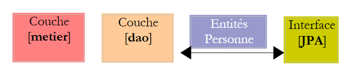 |
The configuration of the [service], [dao], and [JPA] layers is handled by the two files mentioned above: [META-INF/persistence.xml] and [spring-config.xml]. Both files must be in the application’s classpath, which is why they are located in the [src] folder of the Eclipse project. The filename [spring-config.xml] is arbitrary.
persistence.xml
<?xml version="1.0" encoding="UTF-8"?>
<persistence version="1.0" xmlns="http://java.sun.com/xml/ns/persistence" xmlns:xsi="http://www.w3.org/2001/XMLSchema-instance"
xsi:schemaLocation="http://java.sun.com/xml/ns/persistence http://java.sun.com/xml/ns/persistence/persistence_1_0.xsd">
<persistence-unit name="jpa" transaction-type="RESOURCE_LOCAL" />
</persistence>
- Line 4: The file declares a persistence unit named jpa that uses "local" transactions, i.e., transactions not provided by an EJB3 container. These transactions are created and managed by Spring and are configured in the [spring-config.xml] file.
spring-config.xml
<?xml version="1.0" encoding="UTF-8"?>
<beans xmlns="http://www.springframework.org/schema/beans"
xmlns:xsi="http://www.w3.org/2001/XMLSchema-instance"
xmlns:tx="http://www.springframework.org/schema/tx"
xsi:schemaLocation="http://www.springframework.org/schema/beans http://www.springframework.org/schema/beans/spring-beans-2.0.xsd http://www.springframework.org/schema/tx http://www.springframework.org/schema/tx/spring-tx-2.0.xsd">
<!-- application layers -->
<bean id="dao" class="dao.Dao" />
<bean id="service" class="service.Service">
<property name="dao" ref="dao" />
</bean>
<!-- JPA persistence layer -->
<bean id="entityManagerFactory"
class="org.springframework.orm.jpa.LocalContainerEntityManagerFactoryBean">
<property name="dataSource" ref="dataSource" />
<property name="jpaVendorAdapter">
<bean
class="org.springframework.orm.jpa.vendor.HibernateJpaVendorAdapter">
<!--
<property name="showSql" value="true" />
-->
<property name="databasePlatform"
value="org.hibernate.dialect.MySQL5InnoDBDialect" />
<property name="generateDdl" value="true" />
</bean>
</property>
<property name="loadTimeWeaver">
<bean
class="org.springframework.instrument.classloading.InstrumentationLoadTimeWeaver" />
</property>
</bean>
<!-- the DBCP data source -->
<bean id="dataSource"
class="org.apache.commons.dbcp.BasicDataSource"
destroy-method="close">
<property name="driverClassName" value="com.mysql.jdbc.Driver" />
<property name="url" value="jdbc:mysql://localhost:3306/jpa" />
<property name="username" value="jpa" />
<property name="password" value="jpa" />
</bean>
<!-- the transaction manager -->
<tx:annotation-driven transaction-manager="txManager" />
<bean id="txManager"
class="org.springframework.orm.jpa.JpaTransactionManager">
<property name="entityManagerFactory"
ref="entityManagerFactory" />
</bean>
<!-- exception translation -->
<bean
class="org.springframework.dao.annotation.PersistenceExceptionTranslationPostProcessor" />
<!-- persistence annotations -->
<bean
class="org.springframework.orm.jpa.support.PersistenceAnnotationBeanPostProcessor" />
</beans>
- lines 2-5: the root <beans> tag of the configuration file. We will not comment on the various attributes of this tag. Be sure to copy and paste them carefully, as a mistake in any of these attributes can cause errors that are sometimes difficult to understand.
- line 8: the "dao" bean is a reference to an instance of the [dao.Dao] class. A single instance will be created (singleton) and will implement the [dao] layer of the application.
- Lines 9–11: Instantiation of the [service] layer. The "service" bean is a reference to an instance of the [service.Service] class. A single instance will be created (singleton) and will implement the [service] layer of the application. We saw that the [service.Service] class had a private field [IDao dao]. This field is initialized in line 10 by the "dao" bean defined in line 8.
- Ultimately, lines 8–11 have configured the [dao] and [service] layers. We will see later when and how they will be instantiated.
- Lines 35–42: A data source is defined. We have already encountered the concept of a data source when studying JPA entities with Hibernate:
 |
Above, [c3p0], referred to as a "connection pool," could have been called a "data source." A data source provides the "connection pool" service. With Spring, we will use a data source other than [c3p0]. It is [DBCP] from the Apache Commons DBCP project [http://jakarta.apache.org/commons/dbcp/]. The [DBCP] archives have been placed in the [jpa-spring] user library:
 |
- lines 38–41: To establish connections with the target database, the data source needs to know the JDBC driver used (line 38), the database URL (line 39), the connection username, and its password (lines 40–41).
- lines 14–32: configure the JPA layer
- lines 14–15: define an [EntityManagerFactory] bean capable of creating [EntityManager] objects to manage persistence contexts. The instantiated class [LocalContainerEntityManagerFactoryBean] is provided by Spring. It requires a number of parameters to instantiate, defined in lines 16–31.
- line 16: the data source to use for obtaining connections to the DBMS. This is the [DBCP] source defined in lines 35-42.
- Lines 17–27: the JPA implementation to use
- Lines 18–26: define Hibernate (line 19) as the JPA implementation to use
- Lines 23–24: The SQL dialect that Hibernate must use with the target DBMS, in this case MySQL5.
- Line 25: Requests that the database be generated (drop and create) when the application starts.
- Lines 28–31: define a “class loader.” I cannot clearly explain the role of this bean used by the EntityManagerFactory in the JPA layer. However, it involves passing to the JVM running the application the name of an archive whose contents will manage class loading when the application starts. Here, this archive is [spring-agent.jar], located in the user- library [jpa-spring] (see above). We will see that Hibernate does not need this agent, but Toplink does.
- Lines 45–50: define the transaction manager to be used
- Line 45: indicates that transactions are managed using Java annotations (they could also have been declared in spring-config.xml). Specifically, this refers to the @Transactional annotation found in the [Service] class (line 6).
- Lines 46–50: the transaction manager
- Line 47: The transaction manager is a class provided by Spring
- lines 48–49: Spring’s transaction manager needs to know the EntityManagerFactory that manages the JPA layer. This is the one defined in lines 14–32.
- lines 57–58: define the class that manages Spring persistence annotations found in the Java code, such as the @PersistenceContext annotation in the [dao.Dao] class (line 12).
- Lines 53–54: define the Spring class that manages, in particular, the @Repository annotation, which makes a class annotated in this way eligible for the translation of native exceptions from the DBMS’s JDBC driver into generic Spring exceptions of type [DataAccessException]. This translation encapsulates the native JDBC exception in a [DataAccessException] type with various subclasses:

This translation allows the client program to handle exceptions generically regardless of the target DBMS. We did not use the @Repository annotation in our Java code. Therefore, lines 53–54 are unnecessary. We left them in simply for informational purposes.
We are done with the Spring configuration file. It is complex, and many aspects remain unclear. It was taken from the Spring documentation. Fortunately, adapting it to various situations often boils down to two modifications:
- the target database: lines 38–41. We will provide an Oracle example.
- the JPA implementation: lines 14–32. We’ll provide a TopLink example.
3.1.6. Client program [ InitDB]
We will now write a first client for the architecture described above:
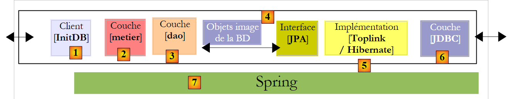 |
The code for [InitDB] is as follows:
package tests;
...
public class InitDB {
// service layer
private static IService service;
// constructor
public static void main(String[] args) throws ParseException {
// application configuration
ApplicationContext ctx = new ClassPathXmlApplicationContext("spring-config.xml");
// service layer
service = (IService) ctx.getBean("service");
// clear the database
clean();
// populate the database
fill();
// check visually
dumpPeople();
}
// display table contents
private static void dumpPeople() {
System.out.format("[people]%n");
for (Person p : service.getAll()) {
System.out.println(p);
}
}
// populate table
public static void fill() throws ParseException {
// create people
Person p1 = new Person("p1", "Paul", new SimpleDateFormat("dd/MM/yy").parse("31/01/2000"), true, 2);
Person p2 = new Person("p2", "Sylvie", new SimpleDateFormat("dd/MM/yy").parse("07/05/2001"), false, 0);
// which we save
service.saveArray(new Person[] { p1, p2 });
}
// Delete table entries
public static void clean() {
for (Person p : service.getAll()) {
service.deleteOne(p.getId());
}
}
}
- Line 12: The [spring-config.xml] file is used to create an [ApplicationContext ctx] object, which is a memory representation of the file. The beans defined in [spring-config.xml] are instantiated at this point.
- line 14: the application context ctx is asked for a reference to the [service] layer. We know that this is represented by a bean named "service".
- line 16: the database is cleared using the clean method in lines 41–45:
- Lines 42–44: We request the list of all users from the persistence context and loop through them to delete them one by one. You may recall that [spring-config.xml] specifies that the database must be generated when the application starts. Therefore, in our case, calling the `clean` method is unnecessary since we are starting with an empty database.
- Line 18: The fill method populates the database. This is defined in lines 32–38:
- Lines 34–35: Two people are created
- line 37: the [service] layer is asked to make them persistent.
- Line 20: The `dumpPersonnes` method displays the persistent people. It is defined on lines 24–29
- Lines 26–28: We request the list of all persistent people from the [service] layer and display them on the console.
Running [InitDB] produces the following result:
3.1.7. Unit tests [ TestNG]
The installation of the [TestNG] plugin is described in section 5.2.4. The [TestNG] program code is as follows:
package tests;
....
public class TestNG {
// service layer
private IService service;
@BeforeClass
public void init() {
// log
log("init");
// application configuration
ApplicationContext ctx = new ClassPathXmlApplicationContext("spring-config.xml");
// service layer
service = (IService) ctx.getBean("service");
}
@BeforeMethod
public void setUp() throws ParseException {
// clear the database
clean();
// fill it
fill();
}
// logs
private void log(String message) {
System.out.println("----------- " + message);
}
// display table contents
private void dump() {
log("dump");
System.out.format("[people]%n");
for (Person p : service.getAll()) {
System.out.println(p);
}
}
// populate table
public void fill() throws ParseException {
log("fill");
// create people
Person p1 = new Person("p1", "Paul", new SimpleDateFormat("dd/MM/yy").parse("31/01/2000"), true, 2);
Person p2 = new Person("p2", "Sylvie", new SimpleDateFormat("dd/MM/yy").parse("05/07/2001"), false, 0);
// which we save
service.saveArray(new Person[] { p1, p2 });
}
// Delete elements from the table
public void clean() {
log("clean");
for (Person p : service.getAll()) {
service.deleteOne(p.getId());
}
}
@Test()
public void test01() {
...
}
...
}
- line 9: The @BeforeClass annotation designates the method to be executed to initialize the configuration required for the tests. It is executed before the first test runs. The @AfterClass annotation, which is not used here, designates the method to be executed once all tests have run.
- lines 10–17: The init method, annotated with @BeforeClass, uses the Spring configuration file to instantiate the various layers of the application and obtain a reference to the [service] layer. All tests then use this reference.
- Line 19: The @BeforeMethod annotation designates the method to be executed before each test. The @AfterMethod annotation, not used here, designates the method to be executed after each test.
- Lines 20–25: The setUp method, annotated with @BeforeMethod, clears the database (clean lines 52–56) and then populates it with two people (fill lines 42–49).
- Line 59: The @Test annotation designates a test method to be executed. We will now describe these tests.
@Test()
public void test01() {
log("test1");
dump();
// list of people
List<Person> people = service.getAll();
assert 2 == people.size();
}
@Test()
public void test02() {
log("test2");
// search for people by name
List<Person> people = service.getAllLike("p1%");
assert 1 == people.size();
Person p1 = people.get(0);
assert "Paul".equals(p1.getFirstName());
}
@Test()
public void test03() throws ParseException {
log("test3");
// Create a new person
Person p3 = new Person("p3", "x", new SimpleDateFormat("dd/MM/yy").parse("05/07/2001"), false, 0);
// save it
service.saveOne(p3);
// retrieve it
Person loadedp3 = service.getOne(p3.getId());
// display it
System.out.println(loadedp3);
// verification
assert "p3".equals(loadedp3.getName());
}
- lines 2–8: Test 01. Remember that at the start of each test, the database contains two people named p1 and p2.
- line 6: we request the list of people
- lines 7: we verify that the number of people in the returned list is 2
- line 14: we request the list of people whose last name starts with p1
- We verify that the resulting list has only one element (line 15) and that the first name of the single person found is "Paul" (line 17)
- line 24: create a person named p3
- line 25: persist it
- line 28: we retrieve it from the persistence context for verification
- line 32: we verify that the person retrieved does indeed have the name p3.
@Test()
public void test04() throws ParseException {
log("test4");
// load the person p1
List<Person> people = service.getAllLike("p1%");
Person p1 = people.get(0);
// display it
System.out.println(p1);
// check
assert "p1".equals(p1.getName());
int version1 = p1.getVersion();
// change the first name
p1.setFirstName("x");
// save
service.updateOne(p1);
// reload
p1 = service.getOne(p1.getId());
// display it
System.out.println(p1);
// check that the version has been incremented
assert (version1 + 1) == p1.getVersion();
}
- line 5: we ask for the person p1
- line 10: check their name
- line 11: we note their version number
- line 13: we modify their first name
- line 15: save the change
- line 17: request person p1 again
- line 21: check that the version number has increased by 1
@Test()
public void test05() {
log("test5");
// load person p2
List<Person> people = service.getAllLike("p2%");
Person p2 = people.get(0);
// display it
System.out.println(p2);
// check
assert "p2".equals(p2.getName());
// delete person p2
service.deleteOne(p2.getId());
// reload it
p2 = service.getOne(p2.getId());
// check that we have obtained a null pointer
assert null == p2;
// display the table
dump();
}
- line 5: we ask for person p2
- line 10: check their name
- line 12: delete them
- line 14: we ask for them again
- line 16: we check that we didn't find them
@Test()
public void test06() throws ParseException {
log("test6");
// create an array of 2 people with the same name (violates the name uniqueness rule)
Person[] people = { new Person("p3", "x", new SimpleDateFormat("dd/MM/yy").parse("31/01/2000"), true, 2),
new Person("p4", "x", new SimpleDateFormat("dd/MM/yy").parse("31/01/2000"), true, 2),
new Person("p4", "x", new SimpleDateFormat("dd/MM/yy").parse("31/01/2000"), true, 2)};
// save this array - we should get an exception and a rollback
boolean error = false;
try {
service.saveArray(people);
} catch (RuntimeException e) {
error = true;
}
// dump
dump();
// checks
assert error;
// search for person named p3
List<Person> peoplep3 = service.getAllLike("p3%");
assert 0 == peopleP3.size();
// dump
dump();
}
- Line 5: We create an array of three people, two of whom have the same name "p4". This violates the uniqueness rule for the @Entity Person name:
@Column(name = "NAME", length = 30, nullable = false, unique = true)
private String name;
- line 11: the array of three people is placed in the persistence context. Adding the second person, p4, should fail. Since the [saveArray] method runs within a transaction, any insertions made previously will be rolled back. Ultimately, no additions will be made.
- Line 18: We verify that [saveArray] has indeed thrown an exception
- Lines 20–21: We verify that person p3, who could have been added, was not added.
@Test()
public void test07() {
log("test7");
// optimistic locking test
// load person p1
List<Person> people = service.getAllLike("p1%");
Person p1 = people.get(0);
// display it
System.out.println(p1);
// increase the number of children
int numberOfChildren1 = p1.getNumberOfChildren();
p1.setChildrenCount(childrenCount1 + 1);
// save p1
Person newp1 = service.updateOne(p1);
assert (nbChildren1 + 1) == newp1.getNumberOfChildren();
System.out.println(newp1);
// save a second time - we should get an exception because p1 no longer has the correct version
// it's newp1 that has it
boolean error = false;
try {
service.updateOne(p1);
} catch (RuntimeException e) {
error = true;
}
// check
assert error;
// increase the number of children of newp1
int numberOfChildren2 = newp1.getNumberOfChildren();
newp1.setChildrenCount(nbChildren2 + 1);
// save newp1
service.updateOne(newp1);
// reload
p1 = service.getOne(p1.getId());
// check
assert (nbChildren1 + 2) == p1.getNumberOfChildren();
System.out.println(p1);
}
- Line 6: Ask for person p1
- line 12: we increase the number of children by 1
- line 14: we update person p1 in the persistence context. The [updateOne] method makes the new version newp1 persistent from p1. It differs from p1 by its version number, which must have been incremented.
- line 15: we check the number of children for newp1.
- line 21: we request an update of person p1 based on the old version p1. An exception should occur because p1 is not the latest version of person p1. The latest version is newp1.
- Line 23: We verify that the error actually occurred
- Lines 27–35: We verify that if an update is performed from the latest version newp1, then everything works correctly.
@Test()
public void test08() {
log("test8");
// rollback test on updateArray
// load person p1
List<Person> people = service.getAllLike("p1%");
Person p1 = people.get(0);
// display it
System.out.println(p1);
// increase the number of children
int numberOfChildren1 = p1.getNumberOfChildren();
p1.setNumberOfChildren(nbChildren1 + 1);
// save 2 changes, the second of which must fail (person initialized incorrectly)
// because of the transaction, both must then be rolled back
boolean error = false;
try {
service.updateArray(new Person[] { p1, new Person() });
} catch (RuntimeException e) {
error = true;
}
// checks
assert error;
// reload person p1
people = service.getAllLike("p1%");
p1 = people.get(0);
// the number of children shouldn't have changed
assert nbChildren1 == p1.getNumberOfChildren();
}
- Test 8 is similar to Test 6: it checks the rollback on an `updateArray` operation performed on an array of two people where the second person has not been initialized correctly. From a JPA perspective, the `merge` operation on the second person—who does not already exist—will generate an `insert` SQL statement that will fail due to the `nullable=false` constraints on some of the fields of the `Person` entity.
@Test()
public void test09() {
log("test9");
// rollback test on deleteArray
// dump
dump();
// load person p1
List<Person> people = service.getAllLike("p1%");
Person p1 = people.get(0);
// display it
System.out.println(p1);
// Perform two deletions, the second of which must fail (unknown person)
// because of the transaction, both must then be rolled back
boolean error = false;
try {
service.deleteArray(new Person[] { p1, new Person() });
} catch (RuntimeException e) {
error = true;
}
// checks
assert error;
// reload person p1
people = service.getAllLike("p1%");
// check
assert 1 == people.size();
// dump
dump();
}
- Test 9 is similar to the previous one: it checks the rollback on a `deleteArray` operation on an array of two people where the second person does not exist. However, in this case, the `[deleteOne]` method in the `[dao]` layer throws an exception.
// optimistic locking - multi-threaded access
@Test()
public void test10() throws Exception {
// Add a person
Person p3 = new Person("X", "X", new SimpleDateFormat("dd/MM/yyyy").parse("01/02/2006"), true, 0);
service.saveOne(p3);
int id3 = p3.getId();
// create N threads to update the number of children
final int N = 20;
Thread[] tasks = new Thread[N];
for (int i = 0; i < tasks.length; i++) {
tasks[i] = new ChildCountUpdateThread("thread # " + i, service, id3);
tasks[i].start();
}
// wait for the threads to finish
for (int i = 0; i < tasks.length; i++) {
tasks[i].join();
}
// retrieve the person
p3 = service.getOne(id3);
// they must have N children
assert N == p3.getNChildren();
// delete person p3
service.deleteOne(p3.getId());
// verification
p3 = service.getOne(p3.getId());
// should return a null pointer
assert p3 == null;
}
- The idea behind Test 10 is to launch N threads (line 9) to increment the number of children for a person in parallel. We want to verify that the version number system can handle this scenario. It was created for this purpose.
- Lines 5–6: A person named p3 is created and persisted. They have 0 children initially.
- Line 7: We record their identifier.
- Lines 9–14: We launch N threads in parallel, each tasked with incrementing the number of children of p3 by 1.
- lines 16–18: we wait for all threads to finish
- line 20: we ask to see the person p3
- line 22: we check that p3 now has N children
- line 24: person p3 is deleted.
The [ThreadMajEnfants] thread is as follows:
package tests;
...
public class ThreadMajEnfants extends Thread {
// thread name
private String name;
// reference to the [service] layer
private IService service;
// ID of the person we will be working on
private int personId;
// constructor
public ThreadUpdateChildren(String name, IService service, int personId) {
this.name = name;
this.service = service;
this.personId = personId;
}
// thread body
public void run() {
// tracking
tracking("started");
// loop until we've successfully incremented by 1
// the number of children of the person with idPersonne
boolean finished = false;
int numberOfChildren = 0;
while (!finished) {
// retrieve a copy of the person with idPerson
Person person = service.getOne(idPerson);
nbChildren = person.getNumberOfChildren();
// tracking
tracking("" + childrenCount + " -> " + (childrenCount + 1) + " for version " + person.getVersion());
// Increment the number of children for the person by 1
person.setChildrenCount(childrenCount + 1);
// wait 10 ms to release the CPU
try {
// tracking
tracking("start waiting");
// pause to yield the CPU
Thread.sleep(10);
// tracking
tracking("end of wait");
} catch (Exception ex) {
throw new RuntimeException(ex.toString());
}
// wait completed - we try to validate the copy
// in the meantime, other threads may have modified the original
try {
// we try to modify the original
service.updateOne(person);
// Success—the original has been modified
finished = true;
} catch (javax.persistence.OptimisticLockException e) {
// Incorrect object version: ignore the exception and try again
} catch (org.springframework.transaction.UnexpectedRollbackException e2) {
// Spring exception that occurs occasionally
} catch (RuntimeException e3) {
// other type of exception - we rethrow it
throw e3;
}
}
// follow-up
loop("has finished and passed the number of children to " + (nbChildren + 1));
}
// follow-up
private void followUp(String message) {
System.out.println(name + " [" + new Date().getTime() + "] : " + message);
}
}
- lines 15–19: the constructor stores the information it needs to function: its name (line 16), the reference to the [service] layer it must use (line 17), and the identifier of the person p whose number of children it must increment (line 18).
- lines 22–66: the [run] method executed by all threads in parallel.
- line 29: the thread repeatedly attempts to increment the number of children for person p. It stops only when it succeeds.
- line 31: person p is queried
- line 36: their number of children is incremented in memory
- lines 38–47: a 10 ms pause is taken. This will allow other threads to obtain the same version of person p. Thus, at the same time, several threads will hold the same version of person p and want to modify it. This is the desired behavior.
- Line 52: Once the pause is over, the thread asks the [service] layer to persist the change. We know that exceptions will occur from time to time, so we have wrapped the operation in a try/catch block.
- Line 55: Tests show that we encounter exceptions of type [javax.persistence.OptimisticLockException]. This is normal: it is the exception thrown by the JPA layer when a thread attempts to modify person p without having the latest version of it. This exception is ignored to allow the thread to retry the operation until it succeeds.
- Line 57: Tests show that we also get exceptions of type [org.springframework.transaction.UnexpectedRollbackException]. This is annoying and unexpected. I have no explanation for this. We are now dependent on Spring, even though we wanted to avoid that. This means that if we run our application in JBoss EJB3, for example, the thread’s code will need to be changed. The Spring exception is also ignored here to allow the thread to retry the increment operation.
- Line 59: Other exception types are propagated to the application.
When [TestNG] is run, we get the following results:

All 10 tests passed successfully.
Test 10 warrants further explanation because the fact that it passed has a somewhat magical aspect to it. Let’s first revisit the configuration of the [dao] layer:
public class Dao implements IDao {
@PersistenceContext
private EntityManager em;
- Line 4: an [EntityManager] object is injected into the em field using the JPA @PersistenceContext annotation. The [dao] layer is instantiated only once. It is a singleton used by all threads utilizing the JPA layer. Thus, the EntityManager em is shared by all threads. This can be verified by displaying the value of em in the [updateOne] method used by the [ThreadMajEnfants] threads: the value is the same for all threads.
Consequently, one might wonder whether the persistent objects of the different threads, managed by the EntityManager em—which is the same for all threads—might not get mixed up and create conflicts among themselves. An example of what could happen can be found in ThreadMajEnfants:
while (!finished) {
// retrieve a copy of the person with idPersonne
Person person = service.getOne(idPerson);
nbChildren = person.getNbChildren();
// continued
track("" + numberOfChildren + " -> " + (numberOfChildren + 1) + " for version " + person.getVersion());
// Increment the person's number of children by 1
person.setNumberOfChildren(numberOfChildren + 1);
// wait 10 ms to release the CPU
try {
// tracking
tracking("start waiting");
// pause to yield the CPU
Thread.sleep(10);
// tracking
tracking("end of wait");
} catch (Exception ex) {
throw new RuntimeException(ex.toString());
}
- Line 3: A thread T1 retrieves person p
- line 8: it increments the number of children of p
- line 14: thread T1 pauses
A thread T2 takes over and also executes line 3: it requests the same person p as T1. If the persistence context of the threads were the same, the person p—already in the context thanks to T1—should be returned to T2. Indeed, the [getOne] method uses the [EntityManager].find method of the JPA API, and this method only accesses the database if the requested object is not part of the persistence context; otherwise, it returns the object from the persistence context. If this were the case, T1 and T2 would hold the same person p. T2 would then increment the number of children of p by 1 again (line 8). If one of the threads successfully updates the data after the pause, then the number of children of p would have been increased by 2 and not by 1 as expected. One might then expect the N threads to set the number of children not to N but to a higher value. However, this is not the case. We can therefore conclude that T1 and T2 do not have the same reference p. We verify this by having the threads display the address of p: it is different for each of them.
It would therefore appear that the threads:
- share the same persistence context manager (EntityManager)
- but each have their own persistence context.
These are just assumptions, and an expert’s opinion would be helpful here.
3.1.8. Changing the DBMS
 |
To change the DBMS, simply replace the [src/spring-config.xml] file [2] with the [spring-config.xml] file for the relevant DBMS from the [conf] folder [1].
The [spring-config.xml] file for Oracle, for example, is as follows:
<?xml version="1.0" encoding="UTF-8"?>
<beans xmlns="http://www.springframework.org/schema/beans" xmlns:xsi="http://www.w3.org/2001/XMLSchema-instance"
xmlns:tx="http://www.springframework.org/schema/tx"
xsi:schemaLocation="http://www.springframework.org/schema/beans http://www.springframework.org/schema/beans/spring-beans-2.0.xsd http://www.springframework.org/schema/tx http://www.springframework.org/schema/tx/spring-tx-2.0.xsd">
...
<bean id="entityManagerFactory" class="org.springframework.orm.jpa.LocalContainerEntityManagerFactoryBean">
<property name="dataSource" ref="dataSource" />
<property name="jpaVendorAdapter">
<bean class="org.springframework.orm.jpa.vendor.HibernateJpaVendorAdapter">
<!--
<property name="showSql" value="true" />
-->
<property name="databasePlatform" value="org.hibernate.dialect.OracleDialect" />
<property name="generateDdl" value="true" />
</bean>
</property>
<property name="loadTimeWeaver">
<bean class="org.springframework.instrument.classloading.InstrumentationLoadTimeWeaver" />
</property>
</bean>
<!-- the DBCP data source -->
<bean id="dataSource" class="org.apache.commons.dbcp.BasicDataSource" destroy-method="close">
<property name="driverClassName" value="oracle.jdbc.OracleDriver" />
<property name="url" value="jdbc:oracle:thin:@localhost:1521:xe" />
<property name="username" value="jpa" />
<property name="password" value="jpa" />
</bean>
...
</beans>
Only a few lines have changed compared to the same file used previously for MySQL5:
- line 14: the SQL dialect that Hibernate must use
- lines 25–28: the characteristics of the JDBC connection to the DBMS
Readers are encouraged to repeat the tests described for MySQL 5 with other DBMSs.
3.1.9. Changing the JPA implementation
Let’s return to the architecture of the previous tests:
 |
We are replacing the JPA/Hibernate implementation with a JPA/TopLink implementation. Since TopLink does not use the same libraries as Hibernate, we are using a new Eclipse project:
 |
- in [1]: the Eclipse project. It is identical to the previous one. The only changes are the configuration file [spring-config.xml] [2] and the [jpa-toplink] library, which replaces the [jpa-hibernate] library.
- in [3]: the examples folder for this tutorial. In [4], the Eclipse project to import.
The configuration file [spring-config.xml] for Toplink becomes the following:
<?xml version="1.0" encoding="UTF-8"?>
<!-- the JVM must be launched with the argument -javaagent:C:\data\2006-2007\eclipse\dvp-jpa\lib\spring\spring-agent.jar
(replace with the exact path to spring-agent.jar)-->
<beans xmlns="http://www.springframework.org/schema/beans" xmlns:xsi="http://www.w3.org/2001/XMLSchema-instance"
xmlns:tx="http://www.springframework.org/schema/tx"
xsi:schemaLocation="http://www.springframework.org/schema/beans http://www.springframework.org/schema/beans/spring-beans-2.0.xsd http://www.springframework.org/schema/tx http://www.springframework.org/schema/tx/spring-tx-2.0.xsd">
<!-- application layers -->
<bean id="dao" class="dao.Dao" />
<bean id="service" class="service.Service">
<property name="dao" ref="dao" />
</bean>
<bean id="entityManagerFactory" class="org.springframework.orm.jpa.LocalContainerEntityManagerFactoryBean">
<property name="dataSource" ref="dataSource" />
<property name="jpaVendorAdapter">
<bean class="org.springframework.orm.jpa.vendor.TopLinkJpaVendorAdapter">
<!--
<property name="showSql" value="true" />
-->
<property name="databasePlatform" value="oracle.toplink.essentials.platform.database.MySQL4Platform" />
<property name="generateDdl" value="true" />
</bean>
</property>
<property name="loadTimeWeaver">
<bean class="org.springframework.instrument.classloading.InstrumentationLoadTimeWeaver" />
</property>
</bean>
<!-- the DBCP data source -->
<bean id="dataSource" class="org.apache.commons.dbcp.BasicDataSource" destroy-method="close">
<property name="driverClassName" value="com.mysql.jdbc.Driver" />
<property name="url" value="jdbc:mysql://localhost:3306/jpa" />
<property name="username" value="jpa" />
<property name="password" value="jpa" />
</bean>
<!-- the transaction manager -->
<tx:annotation-driven transaction-manager="txManager" />
<bean id="txManager" class="org.springframework.orm.jpa.JpaTransactionManager">
<property name="entityManagerFactory" ref="entityManagerFactory" />
</bean>
<!-- exception translation -->
<bean class="org.springframework.dao.annotation.PersistenceExceptionTranslationPostProcessor" />
<!-- persistence -->
<bean class="org.springframework.orm.jpa.support.PersistenceAnnotationBeanPostProcessor" />
</beans>
Only a few lines need to be changed to switch from Hibernate to Toplink:
- line 19: the JPA implementation is now handled by Toplink
- line 23: the [databasePlatform] property has a different value than with Hibernate: the name of a class specific to Toplink. Where to find this name was explained in section 2.1.15.2.
That’s it. Note how easy it is to switch DBMS or JPA implementations with Spring.
We’re not quite done yet, though. When you run [InitDB], for example, you get an exception that’s not easy to understand:
Exception in thread "main" org.springframework.beans.factory.BeanCreationException: Error creating bean with name 'entityManagerFactory' defined in class path resource [spring-config.xml]: Invocation of init method failed; nested exception is java.lang.IllegalStateException: Must start with Java agent to use InstrumentationLoadTimeWeaver. See Spring documentation.
Caused by: java.lang.IllegalStateException: Must start with Java agent to use
The error message on line 1 prompts you to consult the Spring documentation. There, you’ll learn a bit more about the role played by an obscure declaration in the [spring-config.xml] file:
<bean id="entityManagerFactory" class="org.springframework.orm.jpa.LocalContainerEntityManagerFactoryBean">
<property name="dataSource" ref="dataSource" />
<property name="jpaVendorAdapter">
<bean class="org.springframework.orm.jpa.vendor.HibernateJpaVendorAdapter">
<!--
<property name="showSql" value="true" />
-->
<property name="databasePlatform" value="org.hibernate.dialect.OracleDialect" />
<property name="generateDdl" value="true" />
</bean>
</property>
<property name="loadTimeWeaver">
<bean class="org.springframework.instrument.classloading.InstrumentationLoadTimeWeaver" />
</property>
</bean>
Line 1 of the exception refers to a class named [InstrumentationLoadTimeWeaver], which can be found on line 13 of the Spring configuration file. The Spring documentation explains that this class is necessary in certain cases to load the application’s classes and that, for it to function, the JVM must be launched with an agent. This agent is provided by Spring and is called [spring-agent]:
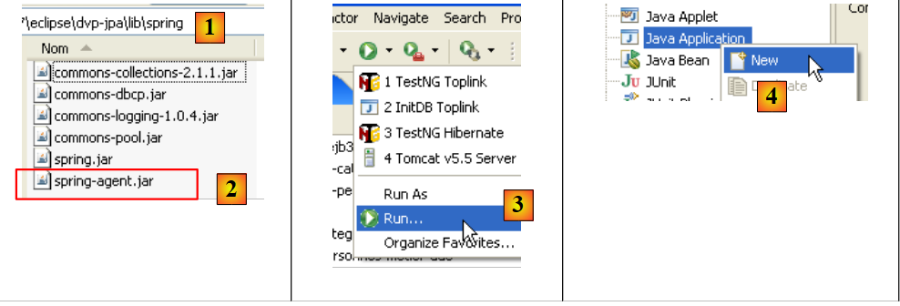 |
- the [spring-agent.jar] file is located in the <examples>/lib folder [1]. It is included with the Spring 2.x distribution (see Section 5.11).
- In [3], create a run configuration [Run/Run...]
- In [4], create a Java run configuration (there are various types of run configurations)
 |
- In [5], select the [Main] tab
- In [6], name the configuration
- In [7], name the Eclipse project associated with this configuration (use the Browse button)
- In [8], name the Java class that contains the [main] method (use the Browse button)
- In [9], go to the [Arguments] tab. There, you can specify two types of arguments:
- in [9], those passed to the [main] method
- in [10], those passed to the JVM that will execute the code. The Spring agent is defined using the JVM parameter -javaagent:value. The value is the path to the [spring-agent.jar] file.
- In [11]: Save the configuration
- in [12]: the configuration is created
- in [13]: we run it
Once this is done, [InitDB] runs and produces the same results as with Hibernate. For [TestNG], proceed in the same way:
 |
- in [1], create a run configuration [Run/Run...]
- in [2], create a TestNG run configuration
- in [3], select the [Test] tab
- in [4], name the configuration
- in [5], name the Eclipse project associated with this configuration (use the Browse button)
- In [6], name the test class (use the Browse button)
 |
- In [7], go to the [Arguments] tab.
- In [8]: Set the -javaagent argument for the JVM.
- In [9]: Save the configuration
- In [10]: The configuration is created
- In [11]: Run it
Once this is done, [TestNG] runs and produces the same results as with Hibernate.
3.2. Example 2: JBoss EJB3/JPA ation with the Person entity
We’ll use the same example as before, but run it in an EJB3 container, specifically JBoss’s:
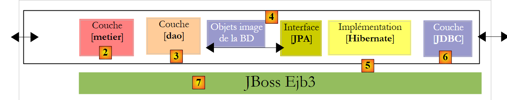 |
An EJB3 container is normally integrated into an application server. JBoss provides a "standalone" EJB3 container that can be used outside of an application server. We will discover that it provides services similar to those provided by Spring. We will try to see which of these containers proves to be the most practical.
The installation of the JBoss EJB3 container is described in Section 5.12.
3.2.1. The Eclipse / JBoss EJB3 / Hibernate Project
The Eclipse project is as follows:
 |
 |
- in [1]: the Eclipse project. It can be found in [6] in the examples of tutorial [5]. We will import it.
- in [2]: the Java code for the layers presented in packages:
- [entities]: the JPA entities package
- [dao]: the data access layer—based on the JPA layer
- [service]: a service layer rather than a business layer. We will use the transaction service of the EJB3 container.
- [tests]: contains the test programs.
- in [3]: the [jpa-jbossejb3] library contains the JARs required for JBoss EJB3 (see also [7] and [8]).
- in [4]: the [conf] folder contains the configuration files for each of the DBMSs used in this tutorial. There are two files for each: [persistence.xml], which configures the JPA layer, and [jboss-config.xml], which configures the EJB3 container.
3.2.2. JPA Entities
 |
There is only one entity managed here: the Person entity discussed earlier in section 3.1.2.
3.2.3. The [dao] layer
 |
The [DAO] layer implements the [IDao] interface described earlier in Section 3.1.3.
The [Dao] implementation of this interface is as follows:
package dao;
...
@Stateless
public class Dao implements IDao {
@PersistenceContext
private EntityManager em;
// delete a person by their ID
@TransactionAttribute(TransactionAttributeType.REQUIRED)
public void deleteOne(Integer id) {
Person person = em.find(Person.class, id);
if (person == null) {
throw new DaoException(2);
}
em.remove(person);
}
// get all people
@TransactionAttribute(TransactionAttributeType.REQUIRED)
public List<Person> getAll() {
return em.createQuery("select p from Person p").getResultList();
}
// Get people whose name matches a pattern
@TransactionAttribute(TransactionAttributeType.REQUIRED)
public List<Person> getAllLike(String pattern) {
return em.createQuery("select p from Person p where p.name like :pattern")
.setParameter("pattern", pattern).getResultList();
}
// Get a person by ID
@TransactionAttribute(TransactionAttributeType.REQUIRED)
public Person getOne(Integer id) {
return em.find(Person.class, id);
}
// Save a person
@TransactionAttribute(TransactionAttributeType.REQUIRED)
public Person saveOne(Person person) {
em.persist(person);
return person;
}
// Update a person
@TransactionAttribute(TransactionAttributeType.REQUIRED)
public Person updateOne(Person person) {
return em.merge(person);
}
}
- This code is identical in every way to the one we had with Spring. Only the Java annotations have changed, and that is what we are discussing.
- Line 4: The @Stateless annotation makes the [Dao] class a stateless EJB. The @Stateful annotation makes a class a stateful EJB. A stateful EJB has private fields whose values must be preserved over time. A classic example is a class that contains information related to a web application’s user. An instance of this class is associated with a specific user, and when the execution thread for that user’s request is complete, the instance must be retained so it is available for the next request from the same client. A @Stateless EJB has no state. Using the same example, at the end of a user’s request execution thread, the @Stateless EJB joins a pool of @Stateless EJBs and becomes available for the execution thread of another user’s request.
- For the developer, the concept of an @Stateless EJB3 is similar to that of a Spring singleton. It is used in the same scenarios.
- Line 7: The @PersistenceContext annotation is the same as the one encountered in the Spring version of the [DAO] layer. It designates the field that will hold the EntityManager, which will allow the [DAO] layer to manipulate the persistence context.
- Line 11: The @TransactionAttribute annotation applied to a method is used to configure the transaction in which the method will execute. Here are some possible values for this annotation:
- TransactionAttributeType.REQUIRED: The method must execute within a transaction. If a transaction has already started, the method’s persistence operations take place within it. Otherwise, a transaction is created and started.
- TransactionAttributeType.REQUIRES_NEW: The method must execute within a new transaction. This transaction is created and started.
- TransactionAttributeType.MANDATORY: The method must execute within an existing transaction. If no such transaction exists, an exception is thrown.
- TransactionAttributeType.NEVER: The method never executes within a transaction.
- ...
The annotation could have been placed on the class itself:
@Stateless
@TransactionAttribute(TransactionAttributeType.REQUIRED)
public class Dao implements IDao {
The attribute is then applied to all methods of the class.
3.2.4. The [business/service] layer
 |
The [service] layer implements the [IService] interface discussed earlier in Section 3.1.4. The [Service] implementation of the [IService] interface is identical to the implementation discussed earlier in Section 3.1.4, with three exceptions:
@Stateless
@TransactionAttribute(TransactionAttributeType.REQUIRED)
public class Service implements IService {
// [DAO] layer
@EJB
private IDao dao;
public IDao getDao() {
return dao;
}
public void setDao(IDao dao) {
this.dao = dao;
}
- Line 2: The [Service] class is a stateless EJB
- line 3: all methods of the [Service] class must be executed within a transaction
- lines 7–8: a reference to the EJB in the [dao] layer will be injected by the EJB container into the [IDao dao] field on line 8. The @EJB annotation on line 7 requests this injection. The injected object must be an EJB. This is a key difference from Spring, where any type of object can be injected into another object.
3.2.5. Configuration of the layers
 |
The configuration of the [service], [dao], and [JPA] layers is handled by the following files:
- [META-INF/persistence.xml] configures the JPA layer
- [jboss-config.xml] configures the EJB3 container. It uses the files [default.persistence.properties, ejb3-interceptors-aop.xml, embedded-jboss-beans.xml, jndi.properties]. These files are included with JBoss EJB3 and provide a default configuration that is normally left untouched. The developer is only concerned with the [jboss-config.xml] file
Let’s examine the two configuration files:
persistence.xml
<persistence xmlns="http://java.sun.com/xml/ns/persistence" xmlns:xsi="http://www.w3.org/2001/XMLSchema-instance"
xsi:schemaLocation="http://java.sun.com/xml/ns/persistence
http://java.sun.com/xml/ns/persistence/persistence_1_0.xsd" version="1.0">
<persistence-unit name="jpa">
<!-- The JPA provider is Hibernate -->
<provider>org.hibernate.ejb.HibernatePersistence</provider>
<!-- the JTA DataSource managed by the Java EE5 environment -->
<jta-data-source>java:/datasource</jta-data-source>
<properties>
<!-- Search for entities in the JBA layer -->
<property name="hibernate.archive.autodetection" value="class, hbm" />
<!-- Hibernate SQL logs
<property name="hibernate.show_sql" value="true"/>
<property name="hibernate.format_sql" value="true"/>
<property name="use_sql_comments" value="true"/>
-->
<!-- supported DBMS type -->
<property name="hibernate.dialect" value="org.hibernate.dialect.MySQLInnoDBDialect" />
<!-- recreation of all tables (drop+create) upon deployment of the persistence unit -->
<property name="hibernate.hbm2ddl.auto" value="create" />
</properties>
</persistence-unit>
</persistence>
This file resembles those we have already encountered in our study of JPA entities. It configures a Hibernate JPA layer. The new features are as follows:
- line 5: the JPA persistence unit does not have the transaction-type attribute that we have always had until now:
<persistence-unit name="jpa" transaction-type="RESOURCE_LOCAL" />
If no value is specified, the transaction-type attribute defaults to "JTA" (for Java Transaction API), indicating that the transaction manager is provided by an EJB 3 container. A "JTA" manager can do more than a "RESOURCE_LOCAL" manager: it can manage transactions spanning multiple connections. With JTA, you can open transaction t1 on connection c1 on DB 1, transaction t2 on connection c2 on DB 2, and treat (t1,t2) as a single transaction in which either all operations succeed (commit) or none do (rollback).
Here, we are using the JTA manager of the JBoss EJB3 container.
- Line 11: Declares the data source that the JTA manager must use. This is specified as a JNDI (Java Naming and Directory Interface) name. This data source is defined in [jboss-config.xml].
jboss-config.xml
<?xml version="1.0" encoding="UTF-8"?>
<deployment xmlns:xsi="http://www.w3.org/2001/XMLSchema-instance" xsi:schemaLocation="urn:jboss:bean-deployer bean-deployer_1_0.xsd"
xmlns="urn:jboss:bean-deployer:2.0">
<!-- DataSource factory -->
<bean name="datasourceFactory" class="org.jboss.resource.adapter.jdbc.local.LocalTxDataSource">
<!-- JNDI name of the DataSource -->
<property name="jndiName">java:/datasource</property>
<!-- managed database -->
<property name="driverClass">com.mysql.jdbc.Driver</property>
<property name="connectionURL">jdbc:mysql://localhost:3306/jpa</property>
<property name="userName">jpa</property>
<property name="password">jpa</property>
<!-- connection pool properties -->
<property name="minSize">0</property>
<property name="maxSize">10</property>
<property name="blockingTimeout">1000</property>
<property name="idleTimeout">100000</property>
<!-- transaction manager, here JTA -->
<property name="transactionManager">
<inject bean="TransactionManager" />
</property>
<!-- Hibernate cache manager -->
<property name="cachedConnectionManager">
<inject bean="CachedConnectionManager" />
</property>
<!-- JNDI instantiation properties? -->
<property name="initialContextProperties">
<inject bean="InitialContextProperties" />
</property>
</bean>
<!-- The DataSource is requested from a factory -->
<bean name="datasource" class="java.lang.Object">
<constructor factoryMethod="getDatasource">
<factory bean="datasourceFactory" />
</constructor>
</bean>
</deployment>
- Line 3: The root tag of the file is <deployment>. This deployment file is primarily intended to configure the java:/datasource data source that was declared in persistence.xml.
- The data source is defined by the "datasource" bean on line 38. We can see that the data source is obtained (line 40) from a "factory" defined by the "datasourceFactory" bean on line 7. To obtain the application's data source, the client must call the [getDatasource] method of the factory (line 39).
- Line 7: The factory that provides the data source is a JBoss class.
- Line 9: The JNDI name of the data source. This must be the same name as the one declared in the <jta-data-source> tag in the persistence.xml file. In fact, the JPA layer will use this JNDI name to request the data source.
- Lines 12–15: something more standard: the JDBC properties for the connection to the DBMS
- Lines 18–21: Configuration of the internal connection pool of the JBoss EJB3 container.
- Lines 24–26: The JTA manager. The [TransactionManager] class injected on line 25 is defined in the [embedded-jboss-beans.xml] file.
- lines 28–30: the Hibernate cache, a concept we haven’t covered yet. The [CachedConnectionManager] class injected on line 29 is defined in the [embedded-jboss-beans.xml] file. Note that the configuration is now dependent on Hibernate, which will cause issues when we want to migrate to TopLink.
- Lines 32–34: JNDI service configuration.
We are done with the JBoss EJB3 configuration file. It is complex, and many aspects remain unclear. It was taken from [ref1]. However, we will be able to adapt it to another DBMS (lines 12–15 of jboss-config.xml, line 24 of persistence.xml). Migration to Toplink was not possible due to a lack of examples.
3.2.6. Client Program [InitDB]
We will now begin writing the first client for the architecture described above:
 |
The code for [InitDB] is as follows:
package tests;
...
public class InitDB {
// service layer
private static IService service;
// constructor
public static void main(String[] args) throws ParseException, NamingException {
// Start the JBoss EJB3 container
// The configuration files ejb3-interceptors-aop.xml and embedded-jboss-beans.xml are used
EJB3StandaloneBootstrap.boot(null);
// Create application-specific beans
EJB3StandaloneBootstrap.deployXmlResource("META-INF/jboss-config.xml");
// Deploy all EJBs found on the classpath (slow, scans all)
// EJB3StandaloneBootstrap.scanClasspath();
// Deploy all EJBs found in the application's classpath
EJB3StandaloneBootstrap.scanClasspath("bin".replace("/", File.separator));
// Initialize the JNDI context. The jndi.properties file is used
InitialContext initialContext = new InitialContext();
// Instantiate the service layer
service = (IService) initialContext.lookup("Service/local");
// Clear the database
clean();
// populate the database
fill();
// visually check
dumpPeople();
// stop the EJB container
EJB3StandaloneBootstrap.shutdown();
}
// display table contents
private static void dumpPeople() {
System.out.format("[people]-------------------------------------------------------------------%n");
for (Person p : service.getAll()) {
System.out.println(p);
}
}
// populate table
public static void fill() throws ParseException {
// create people
Person p1 = new Person("p1", "Paul", new SimpleDateFormat("dd/MM/yy").parse("31/01/2000"), true, 2);
Person p2 = new Person("p2", "Sylvie", new SimpleDateFormat("dd/MM/yy").parse("05/07/2001"), false, 0);
// which we save
service.saveArray(new Person[] { p1, p2 });
}
// Delete elements from the table
public static void clean() {
for (Person p : service.getAll()) {
service.deleteOne(p.getId());
}
}
}
- The method for starting the JBoss EJB3 container was found in [ref1].
- Line 13: The container is started. [EJB3StandaloneBootstrap] is a class of the container.
- Line 16: The deployment unit configured by [jboss-config.xml] is deployed to the container: the JTA manager, data source, connection pool, Hibernate cache, and JNDI service are set up.
- Line 22: The container is instructed to scan the Eclipse project’s bin folder to locate the EJBs. The EJBs from the [service] and [dao] layers will be found and managed by the container.
- Line 25: A JNDI context is initialized. We will use it to locate the EJBs.
- Line 28: The EJB corresponding to the [Service] class in the [service] layer is requested from the JNDI service. An EJB can be accessed locally or via the network. Here, the name "Service/local" of the EJB being searched for refers to the [Service] class in the [service] layer for local access.
- Now, the application is deployed, and we have a reference to the [service] layer. We are in the same situation as after line 11 below in the [InitDB] code of the Spring version. We therefore find the same code in both versions.
public class InitDB {
// service layer
private static IService service;
// constructor
public static void main(String[] args) throws ParseException {
// application configuration
ApplicationContext ctx = new ClassPathXmlApplicationContext("spring-config.xml");
// service layer
service = (IService) ctx.getBean("service");
// clear the database
clean();
// fill it
fill();
// check visually
dumpPeople();
}
...
- line 36 (JBoss EJB3): stop the EJB3 container.
Running [InitDB] yields the following results:
Readers are encouraged to review these logs. They contain interesting information about what the EJB3 container does.
3.2.7. Unit tests [TestNG]
The [TestNG] program code is as follows:
package tests;
...
public class TestNG {
// service layer
private IService service = null;
@BeforeClass
public void init() throws NamingException, ParseException {
// log
log("init");
// Start the JBoss EJB3 container
// The configuration files ejb3-interceptors-aop.xml and embedded-jboss-beans.xml are used
EJB3StandaloneBootstrap.boot(null);
// Create application-specific beans
EJB3StandaloneBootstrap.deployXmlResource("META-INF/jboss-config.xml");
// Deploy all EJBs found on the classpath (slow, scans everything)
// EJB3StandaloneBootstrap.scanClasspath();
// Deploy all EJBs found in the application's classpath
EJB3StandaloneBootstrap.scanClasspath("bin".replace("/", File.separator));
// Initialize the JNDI context. The jndi.properties file is used
InitialContext initialContext = new InitialContext();
// Instantiate the service layer
service = (IService) initialContext.lookup("Service/local");
// Clear the database
clean();
// populate the database
fill();
// visually check
dumpPeople();
}
@AfterClass
public void terminate() {
// log
log("terminate");
// Shut down EJB container
EJB3StandaloneBootstrap.shutdown();
}
@BeforeMethod
public void setUp() throws ParseException {
...
}
...
}
- The init method (lines 10–37), which sets up the environment required for testing, uses the code explained earlier in [InitDB].
- The terminate method (lines 40–45), which is executed at the end of the tests (due to the @AfterClass annotation), stops the EJB3 container (line 44).
- Everything else is identical to what it was in the Spring version.
The tests pass:

3.2.8. Changing the DBMS
 |
To change the DBMS, simply replace the contents of the [META-INF] folder [2] with those from the DBMS folder in the [conf] folder [1]. Let’s take SQL Server as an example:
The [persistence.xml] file is as follows:
<persistence xmlns="http://java.sun.com/xml/ns/persistence" xmlns:xsi="http://www.w3.org/2001/XMLSchema-instance"
xsi:schemaLocation="http://java.sun.com/xml/ns/persistence
http://java.sun.com/xml/ns/persistence/persistence_1_0.xsd" version="1.0">
<persistence-unit name="jpa">
<!-- The JPA provider is Hibernate -->
<provider>org.hibernate.ejb.HibernatePersistence</provider>
<!-- the JTA DataSource managed by the Java EE 5 environment -->
<jta-data-source>java:/datasource</jta-data-source>
<properties>
<!-- Search for entities in the JBA layer -->
<property name="hibernate.archive.autodetection" value="class, hbm" />
<!-- Hibernate SQL logs
<property name="hibernate.show_sql" value="true"/>
<property name="hibernate.format_sql" value="true"/>
<property name="use_sql_comments" value="true"/>
-->
<!-- supported DBMS type -->
<property name="hibernate.dialect" value="org.hibernate.dialect.SQLServerDialect" />
<!-- recreation of all tables (drop+create) upon deployment of the persistence unit -->
<property name="hibernate.hbm2ddl.auto" value="create" />
</properties>
</persistence-unit>
</persistence>
Only one line has changed:
- line 24: the SQL dialect that Hibernate must use
The SQL Server [jboss-config.xml] file is as follows:
<?xml version="1.0" encoding="UTF-8"?>
<deployment xmlns:xsi="http://www.w3.org/2001/XMLSchema-instance" xsi:schemaLocation="urn:jboss:bean-deployer bean-deployer_1_0.xsd"
xmlns="urn:jboss:bean-deployer:2.0">
<!-- DataSource factory -->
<bean name="datasourceFactory" class="org.jboss.resource.adapter.jdbc.local.LocalTxDataSource">
<!-- JNDI name of the DataSource -->
<property name="jndiName">java:/datasource</property>
<!-- managed database -->
<property name="driverClass">com.microsoft.sqlserver.jdbc.SQLServerDriver</property>
<property name="connectionURL">jdbc:sqlserver://localhost\\SQLEXPRESS:1246;databaseName=jpa</property>
<property name="userName">jpa</property>
<property name="password">jpa</property>
<!-- connection pool properties -->
...
</bean>
</deployment>
Only lines 12–15 have been changed: they specify the characteristics of the new JDBC connection.
Readers are encouraged to repeat the tests described for MySQL5 with other DBMSs.
3.2.9. Changing the JPA Implementation
As mentioned above, we have not found any examples of using the JBoss EJB3 container with TopLink. As of this writing (June 2007), I still do not know if this configuration is possible.
3.3. Other examples
Let’s summarize what has been done with the Person entity. We have built three architectures to run the same tests:
1 - a Spring/Hibernate implementation
 |
2 - a Spring/TopLink implementation
 |
3 - a JBoss EJB3 / Hibernate implementation
 |
The examples in the tutorial use these three architectures along with other entities covered in the first part of the tutorial:
Category - Article
 |
- in [1]: the Spring/Hibernate version
- in [2]: the Spring / Toplink version
- in [3]: the JBoss EJB3 / Hibernate version
Person - Address - Activity
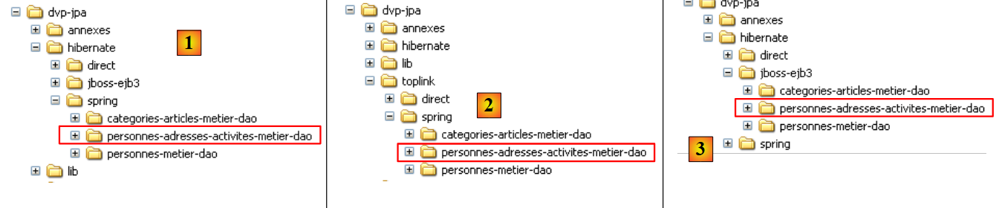 |
- in [1]: the Spring/Hibernate version
- in [2]: the Spring/Toplink version
- in [3]: the JBoss EJB3 / Hibernate version
These examples do not introduce any new architectural concepts. They simply apply to a scenario where there are multiple entities to manage, with one-to-many or many-to-many relationships between them—something the examples using the Person entity did not have.
3.4. Example 3: Spring / JPA in a web application
3.4.1. Overview
Here we revisit an application presented in the following document:
[ref4]: The Basics of MVC Web Development in Java [http://tahe.developpez.com/java/baseswebmvc/].
This document presents the basics of MVC web development in Java. To understand the following example, the reader should be familiar with these basics. The web application will use the Tomcat server. Its installation and use within Eclipse are described in Section 5.3.
The application was originally developed with a [DAO] layer based on the iBatis/SQLMap tool [http://ibatis.apache.org/], which handled the relational-to-object mapping. We will simply replace iBatis with JPA. The application architecture will be as follows:
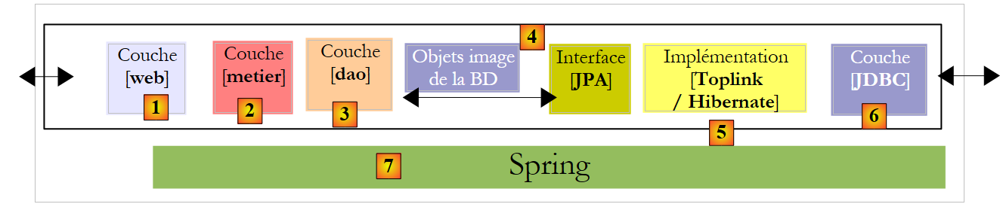 |
The web application we are going to write will allow us to manage a group of people using four operations:
- list of people in the group
- add a person to the group
- modify a person in the group
- removing a person from the group
These four basic operations are common in a database table. The following screen s show the pages that the application displays to the user.
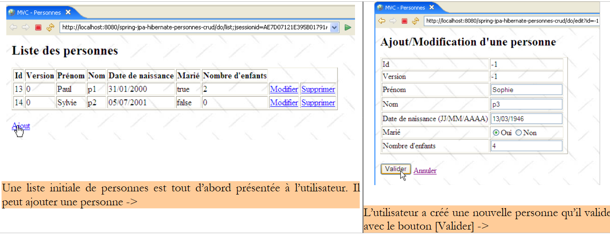 |
 |
 |
 |
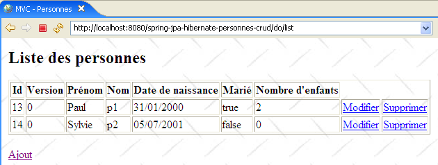 |
3.4.2. The Eclipse Project
The Eclipse project for the application is as follows:
 |
- in [1]: the web project. This is an Eclipse project of the [Dynamic Web Project] type [2]. It can be found in [4] in the [3] folder of the tutorial examples. We will import it.
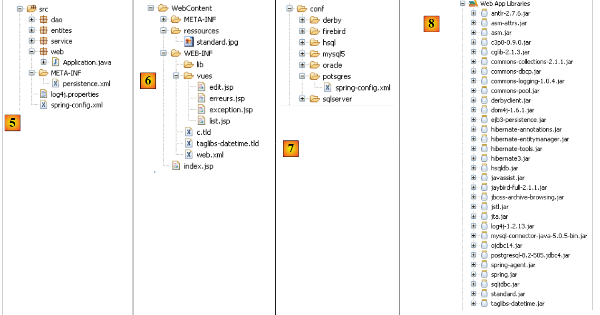 |
- in [5]: the sources and configuration of the [service, dao, jpa] layers. We retain the existing [dao, entities, service] components from the Eclipse project [hibernate-spring-people-business-dao] discussed in section 3.1.1. We are only developing the [web] layer, represented here by the [web] package. Furthermore, we retain the configuration files [persistence.xml, spring-config.xml] from that project, with the exception that we will use the Postgres DBMS, which results in the following changes in [spring-config.xml]:
<?xml version="1.0" encoding="UTF-8"?>
<beans xmlns="http://www.springframework.org/schema/beans"
...
<bean id="entityManagerFactory" class="org.springframework.orm.jpa.LocalContainerEntityManagerFactoryBean">
<property name="dataSource" ref="dataSource" />
<property name="jpaVendorAdapter">
...
<property name="databasePlatform" value="org.hibernate.dialect.PostgreSQLDialect" />
...
</property>
...
</bean>
<!-- the DBCP data source -->
<bean id="dataSource" class="org.apache.commons.dbcp.BasicDataSource" destroy-method="close">
<property name="driverClassName" value="org.postgresql.Driver" />
<property name="url" value="jdbc:postgresql:jpa" />
<property name="username" value="jpa" />
<property name="password" value="jpa" />
</bean>
....
</beans>
Lines 8 and 16–19 have been adapted for Postgres.
- In [6]: the [WebContent] folder contains the project's JSP pages as well as the necessary libraries. These are listed in [8]
- The application can be used with various DBMSs. Simply modify the [spring-config.xml] file. The [conf] folder [7] contains the [spring-config.xml] file adapted for various DBMSs.
3.4.3. The [web] layer
Our application has the following multi-layer architecture:
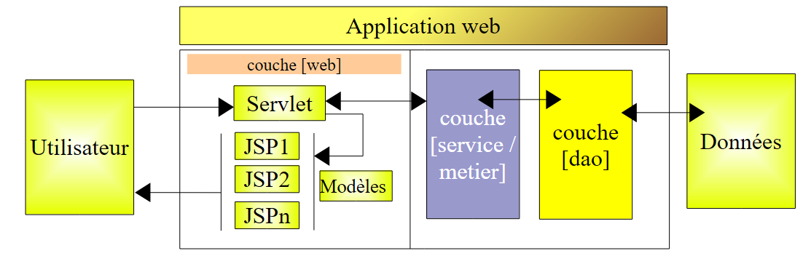 |
The [web] layer will provide screens to the user to allow them to manage the group of people:
- list of people in the group
- add a person to the group
- editing a person in the group
- removing a person from the group
To do this, it will rely on the [service] layer, which in turn will call upon the [DAO] layer. We have already presented the screens managed by the [web] layer (section 3.4.1). To describe the web layer, we will present the following in turn:
- its configuration
- its views
- its controller
- some tests
3.4.3.1. Web Application Configuration
Let’s take a look at the Eclipse project architecture:
 |  |
- In the [web] package, we find the web application controller: the [Application] class.
- The application’s JSP/JSTL pages are in [WEB-INF/views].
- The [WEB-INF/lib] folder contains the third-party libraries required by the application. They are visible in the [Web App Libraries] folder.
[web.xml]
The [web.xml] file is the file used by the web server to load the application. Its contents are as follows:
<?xml version="1.0" encoding="UTF-8"?>
<web-app id="WebApp_ID" version="2.4" xmlns="http://java.sun.com/xml/ns/j2ee" xmlns:xsi="http://www.w3.org/2001/XMLSchema-instance"
xsi:schemaLocation="http://java.sun.com/xml/ns/j2ee http://java.sun.com/xml/ns/j2ee/web-app_2_4.xsd">
<display-name>spring-jpa-hibernate-people-crud</display-name>
<!-- PersonServlet -->
<servlet>
<servlet-name>people</servlet-name>
<servlet-class>web.Application</servlet-class>
<init-param>
<param-name>urlEdit</param-name>
<param-value>/WEB-INF/views/edit.jsp</param-value>
</init-param>
<init-param>
<param-name>urlErrors</param-name>
<param-value>/WEB-INF/views/errors.jsp</param-value>
</init-param>
<init-param>
<param-name>urlList</param-name>
<param-value>/WEB-INF/views/list.jsp</param-value>
</init-param>
</servlet>
<!-- ServletPersonne mapping -->
<servlet-mapping>
<servlet-name>people</servlet-name>
<url-pattern>/do/*</url-pattern>
</servlet-mapping>
<!-- welcome files -->
<welcome-file-list>
<welcome-file>index.jsp</welcome-file>
</welcome-file-list>
<!-- Unexpected error page -->
<error-page>
<exception-type>java.lang.Exception</exception-type>
<location>/WEB-INF/views/exception.jsp</location>
</error-page>
</web-app>
- lines 23-26: URLs [/do/*] will be handled by the [people] servlet
- lines 7-8: the [personnes] servlet is an instance of the [Application] class, a class we will build.
- lines 9-20: define three parameters [urlList, urlEdit, urlErrors] identifying the URLs of the JSP pages for the [list, edit, errors] views.
- lines 28-30: the application has a default entry page [index.jsp] located at the root of the web application folder.
- lines 32–35: The application has a default error page that is displayed when the web server encounters an exception not handled by the application.
- Line 37: The <exception-type> tag specifies the type of exception handled by the <error-page> directive; here, it is the [java.lang.Exception] type and its subtypes, meaning all exceptions.
- Line 38: The <location> tag specifies the JSP page to display when an exception of the type defined by <exception-type> occurs. The exception that occurred is available on this page in an object named exception if the page has the directive:
<%@ page isErrorPage="true" %>
- (continued)
- If <exception-type> specifies type T1 and an exception of type T2 (not derived from T1) is propagated up to the web server, the server sends the client a proprietary exception page, which is generally not very user-friendly. Hence the importance of the <error-page> tag in the [web.xml] file.
[index.jsp]
This page is displayed if a user directly requests the application context without specifying a URL, i.e., here [/spring-jpa-hibernate-personnes-crud]. Its content is as follows:
<%@ page language="java" pageEncoding="ISO-8859-1" contentType="text/html;charset=ISO-8859-1"%>
<%@ taglib uri="/WEB-INF/c.tld" prefix="c" %>
<c:redirect url="/do/list"/>
[index.jsp] redirects (line 4) the client to the URL [/do/list]. This URL displays the list of people in the group.
3.4.3.2. The application's JSP/JSTL pages
It is used to display the list of people:

Its code is as follows:
<%@ page language="java" pageEncoding="ISO-8859-1" contentType="text/html;charset=ISO-8859-1"%>
<%@ taglib uri="/WEB-INF/c.tld" prefix="c" %>
<%@ taglib uri="/WEB-INF/taglibs-datetime.tld" prefix="dt" %>
<html>
<head>
<title>MVC - People</title>
</head>
<body background="<c:url value="/resources/standard.jpg"/>">
<c:if test="${errors!=null}">
<h3>The following errors occurred:</h3>
<ul>
<c:forEach items="${errors}" var="error">
<li><c:out value="${error}"/></li>
</c:forEach>
</ul>
<hr>
</c:if>
<h2>List of people</h2>
<table border="1">
<tr>
<th>ID</th>
<th>Version</th>
<th>Last Name</th>
<th>Last Name</th>
<th>Date of Birth</th>
<th>Married</th>
<th>Number of children</th>
<th></th>
</tr>
<c:forEach var="person" items="${people}">
<tr>
<td><c:out value="${personne.id}"/></td>
<td><c:out value="${person.version}"/></td>
<td><c:out value="${person.first_name}"/></td>
<td><c:out value="${person.lastName}"/></td>
<td><dt:format pattern="dd/MM/yyyy">${person.birthdate.time}</dt:format></td>
<td><c:out value="${person.married}"/></td>
<td><c:out value="${person.nbenfants}"/></td>
<td><a href="<c:url value="/do/edit?id=${personne.id}"/>">Edit</a></td>
<td><a href="<c:url value="/do/delete?id=${personne.id}"/>">Delete</a></td>
</tr>
</c:forEach>
</table>
<br>
<a href="<c:url value="/do/edit?id=-1"/>">Add</a>
</body>
</html>
- This view receives two elements in its model:
- the [people] element associated with a [List] of [Person] objects: a list of people.
- the optional [errors] element associated with a [List] of [String] objects: a list of error messages.
- Lines 31–43: We iterate through the ${people} list to display an HTML table containing the people in the group.
- line 40: the URL pointed to by the [Edit] link is set using the [id] field of the current person so that the controller associated with the URL [/do/edit] knows which person to edit.
- line 41: the same is done for the [Delete] link.
- line 37: To display the person’s date of birth in the format DD/MM/YYYY, we use the <dt> tag from the [DateTime] tag library of the Apache [Jakarta Taglibs] project:

The description file for this tag library is defined on line 3.
- Line 46: The [Add] link for adding a new person targets the URL [/do/edit], just like the [Edit] link on line 40. The value -1 for the [id] parameter indicates that this is an addition rather than an edit.
- Lines 10–18: If the ${errors} element is present in the template, the error messages it contains are displayed.
It is used to display the form for adding a new person or modifying an existing one:
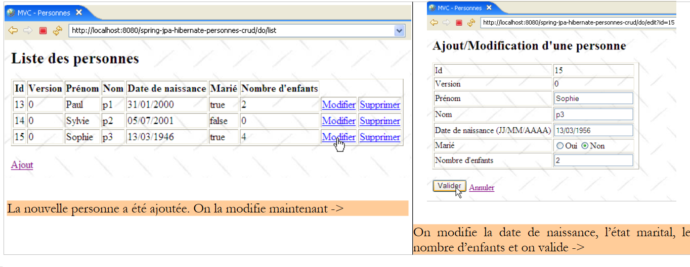 |
The code for the [edit.jsp] view is as follows:
<%@ page language="java" pageEncoding="ISO-8859-1" contentType="text/html;charset=ISO-8859-1"%>
<%@ taglib uri="/WEB-INF/c.tld" prefix="c" %>
<%@ taglib uri="/WEB-INF/taglibs-datetime.tld" prefix="dt" %>
<html>
<head>
<title>MVC - People</title>
</head>
<body background="../resources/standard.jpg">
<h2>Add/Edit a Person</h2>
<c:if test="${errorEdit!=''}">
<h3>Update failed:</h3>
The following error occurred: ${erreurEdit}
<hr>
</c:if>
<form method="post" action="<c:url value="/do/validate"/>">
<table border="1">
<tr>
<td>Id</td>
<td>${id}</td>
</tr>
<tr>
<td>Version</td>
<td>${version}</td>
</tr>
<tr>
<td>First Name</td>
<td>
<input type="text" value="${first_name}" name="first_name" size="20">
</td>
<td>${firstNameError}</td>
</tr>
<tr>
<td>Name</td>
<td>
<input type="text" value="${name}" name="name" size="20">
</td>
<td>${nameError}</td>
</tr>
<tr>
<td>Date of birth (DD/MM/YYYY)</td>
<td>
<input type="text" value="${birthdate}" name="birthdate">
</td>
<td>${birthdateError}</td>
</tr>
<tr>
<td>Husband</td>
<td>
<c:choose>
<c:when test="${marie}">
<input type="radio" name="marie" value="true" checked>Yes
<input type="radio" name="marie" value="false">No
</c:when>
<c:otherwise>
<input type="radio" name="marie" value="true">Yes
<input type="radio" name="marie" value="false" checked>No
</c:otherwise>
</c:choose>
</td>
</tr>
<tr>
<td>Number of children</td>
<td>
<input type="text" value="${nbenfants}" name="nbenfants">
</td>
<td>${erreurNbEnfants}</td>
</tr>
</table>
<br>
<input type="hidden" value="${id}" name="id">
<input type="hidden" value="${version}" name="version">
<input type="submit" value="Submit">
<a href="<c:url value="/do/list"/>">Cancel</a>
</form>
</body>
</html>
This view displays a form for adding a new person or updating an existing one. From now on, to simplify the text, we will use the single term [update]. The [Submit] button (line 73) triggers a POST request to the URL [/do/validate] (line 16). If the POST fails, the [edit.jsp] view is re-displayed with the error(s) that occurred; otherwise, the [list.jsp] view is displayed.
- The [edit.jsp] view, which is displayed both on a GET request and on a failed POST request, receives the following elements in its model:
attribute | GET | POST |
ID of the person being updated | same | |
its version | same | |
first name | First name entered | |
his/her last name | last name entered | |
his date of birth | entered date of birth | |
marital status | entered marital status | |
number of children | number of children entered | |
empty | an error message indicating that the addition or modification at the time of the POST triggered by the [Submit] button. Empty if no error. | |
empty | indicates an incorrect first name – empty otherwise | |
empty | indicates an incorrect last name – empty otherwise | |
empty | indicates an incorrect date of birth – empty otherwise | |
empty | indicates an incorrect number of children – empty otherwise |
- lines 11-15: if the form POST fails, [errorEdit!=''] will be returned and an error message will be displayed.
- line 16: the form will be submitted to the URL [/do/validate]
- line 20: the [id] element of the template is displayed
- line 24: the [version] element of the template is displayed
- lines 26-32: entering the person’s first name:
- When the form is initially displayed (GET), ${firstName} displays the current value of the [firstName] field of the updated [Person] object, and ${firstNameError} is empty.
- in case of an error after the POST, the entered value ${firstName} is displayed again, along with any error message ${firstNameError}
- lines 33-39: entering the person's last name
- lines 40–46: Entering the person’s date of birth
- Lines 47–61: Entering the person’s marital status using a radio button. The value of the [married] field of the [Person] object is used to determine which of the two radio buttons should be selected.
- lines 62-68: enter the person’s number of children
- line 71: a hidden HTML field named [id] with a value equal to the [id] field of the person being updated, -1 for an addition, or another value for a modification.
- line 72: a hidden HTML field named [version] with a value equal to the [id] field of the person being updated.
- Line 73: The [Submit] button of the form
- line 74: a link to return to the list of people. It is labeled [Cancel] because it allows you to exit the form without submitting it.
This page is used to display a message indicating that an exception not handled by the application has occurred and has been propagated to the web server.
For example, let’s delete a person who does not exist in the group:
 |
The code for the [exception.jsp] view is as follows:
<%@ page language="java" pageEncoding="ISO-8859-1" contentType="text/html;charset=ISO-8859-1"%>
<%@ taglib uri="/WEB-INF/c.tld" prefix="c" %>
<%@ page isErrorPage="true" %>
<%
response.setStatus(200);
%>
<html>
<head>
<title>MVC - People</title>
</head>
<body background="<c:url value="/resources/standard.jpg"/>">
<h2>MVC - People</h2>
The following exception occurred:
<%= exception.getMessage()%>
<br><br>
<a href="<c:url value="/do/list"/>">Back to list</a>
</body>
</html>
- This view receives a key in its template, the [exception] element, which is the exception that was intercepted by the web server. For this element to be included in the JSP page template by the web server, the page must have defined the tag on line 3.
- Line 6: The HTTP status code of the response is set to 200. This is the first HTTP header in the response. The 200 code tells the client that its request has been fulfilled. Generally, an HTML document has been included in the server’s response. That is the case here. If the HTTP status code of the response is not set to 200, it will have the value 500 here, which means an error has occurred. In fact, when the web server intercepts an unhandled exception, it considers this an abnormal situation and signals it with a 500 code. The response to an HTTP 500 code varies by browser: Firefox displays the HTML document that may accompany this response, while IE ignores this document and displays its own page. This is why we replaced the 500 code with the 200 code.
- Line 16: The exception text is displayed
- Line 18: The user is offered a link to return to the list of people
It is used to display a page reporting application initialization errors, i.e., errors detected during the execution of the [init] method of the controller servlet. This could be, for example, the absence of a parameter in the [web.xml] file, as shown in the example below:

The code for the [errors.jsp] page is as follows:
<%@ page language="java" contentType="text/html; charset=ISO-8859-1"
pageEncoding="ISO-8859-1"%>
<!DOCTYPE HTML PUBLIC "-//W3C//DTD HTML 4.01 Transitional//EN">
<%@ taglib uri="/WEB-INF/c.tld" prefix="c" %>
<html>
<head>
<title>MVC - People</title>
</head>
<body>
<h2>The following errors occurred</h2>
<ul>
<c:forEach var="error" items="${errors}">
<li>${error}</li>
</c:forEach>
</ul>
</body>
</html>
The page receives an [errors] element in its template, which is an [ArrayList] of [String] objects; these are error messages. They are displayed by the loop in lines 13–15.
3.4.3.3. The application controller
The [Application] controller is defined in the [web] package:

Structure ture and initialization of the controller
The skeleton of the [Application] controller is as follows:
package web;
...
@SuppressWarnings("serial")
public class Application extends HttpServlet {
// instance parameters
private String errorUrl = null;
private ArrayList initializationErrors = new ArrayList<String>();
private String[] parameters = { "urlList", "urlEdit", "urlErrors" };
private Map params = new HashMap<String, String>();
// service
private IService service = null;
// init
@SuppressWarnings("unchecked")
public void init() throws ServletException {
// retrieve the servlet's initialization parameters
ServletConfig config = getServletConfig();
// process the other initialization parameters
String value = null;
for (int i = 0; i < parameters.length; i++) {
// parameter value
value = config.getInitParameter(parameters[i]);
// Is the parameter present?
if (value == null) {
// log the error
initializationErrors.add("The parameter [" + parameters[i] + "] has not been initialized");
} else {
// store the parameter value
params.put(parameters[i], value);
}
}
// The URL for the [errors] view requires special handling
errorsUrl = config.getInitParameter("errorsUrl");
if (errorsUrl == null)
throw new ServletException("The [urlErrors] parameter has not been initialized");
// application configuration
ApplicationContext ctx = new ClassPathXmlApplicationContext("spring-config.xml");
// service layer
service = (IService) ctx.getBean("service");
// clear the database
clean();
// populate the database
try {
fill();
} catch (ParseException e) {
throw new ServletException(e);
}
}
// populate table
public void fill() throws ParseException {
// create people
Person p1 = new Person("p1", "Paul", new SimpleDateFormat("dd/MM/yy").parse("31/01/2000"), true, 2);
Person p2 = new Person("p2", "Sylvie", new SimpleDateFormat("dd/MM/yy").parse("05/07/2001"), false, 0);
// which we save
service.saveArray(new Person[] { p1, p2 });
}
// delete elements from the table
public void clean() {
for (Person p : service.getAll()) {
service.deleteOne(p.getId());
}
}
// GET
@SuppressWarnings("unchecked")
public void doGet(HttpServletRequest request, HttpServletResponse response) throws IOException, ServletException {
...
}
// display list of people
private void doListPeople(HttpServletRequest request, HttpServletResponse response) throws ServletException, IOException {
...
}
// edit / add a person
private void doEditPerson(HttpServletRequest request, HttpServletResponse response) throws ServletException, IOException {
...
}
// Delete a person
private void doDeletePerson(HttpServletRequest request, HttpServletResponse response) throws ServletException, IOException {
...
}
// validate modification / add a person
public void doValidatePerson(HttpServletRequest request, HttpServletResponse response) throws ServletException, IOException {
...
}
// display pre-filled form
private void showForm(HttpServletRequest request, HttpServletResponse response, String errorEdit) throws ServletException, IOException {
...
}
// post
public void doPost(HttpServletRequest request, HttpServletResponse response) throws IOException, ServletException {
// Pass control to GET
doGet(request, response);
}
}
- lines 21–34: We retrieve the parameters specified in the [web.xml] file.
- lines 37-39: the [urlErrors] parameter must be present because it specifies the URL of the [errors] view capable of displaying any initialization errors. If it does not exist, the application is terminated by throwing a [ServletException] (line 39). This exception will be propagated to the web server and handled by the <error-page> tag in the [web.xml] file. The [exception.jsp] view is therefore displayed:

The [Back to list] link above is inactive. Clicking it returns the same response as long as the application has not been modified and reloaded. It is useful for other types of exceptions, as we have already seen.
- Lines 40–43: use the Spring configuration file to retrieve a reference to the [service] layer. After the controller is initialized, its methods have a [service] reference to the [service] layer (line 15) that they will use to execute the actions requested by the user. These will be intercepted by the [doGet] method, which will have them processed by a specific method of the controller:
Url | HTTP Method | Controller method |
GET | doListPeople | |
GET | doEditPerson | |
POST | doValidatePerson | |
GET | doDeletePerson |
The [doGet] method
The purpose of this method is to route the processing of user-requested actions to the correct method. Its code is as follows:
// GET
@SuppressWarnings("unchecked")
public void doGet(HttpServletRequest request, HttpServletResponse response) throws IOException, ServletException {
// Check how the servlet initialization went
if (initializationErrors.size() != 0) {
// redirect to the error page
request.setAttribute("errors", initializationErrors);
getServletContext().getRequestDispatcher(errorURL).forward(request, response);
// end
return;
}
// retrieve the request method
String method = request.getMethod().toLowerCase();
// retrieve the action to be executed
String action = request.getPathInfo();
// action?
if (action == null) {
action = "/list";
}
// execute action
if (method.equals("get") && action.equals("/list")) {
// list of people
doListPeople(request, response);
return;
}
if (method.equals("get") && action.equals("/delete")) {
// delete a person
doDeletePerson(request, response);
return;
}
if (method.equals("get") && action.equals("/edit")) {
// display form to add/edit a person
doEditPerson(request, response);
return;
}
if (method.equals("post") && action.equals("/validate")) {
// validation of the form for adding or editing a person
doValidatePerson(request, response);
return;
}
// other cases
doListPeople(request, response);
}
- lines 7–13: We check that the list of initialization errors is empty. If it is not, we display the [errors(errors)] view, which will report the error(s).
- line 15: We retrieve the [get] or [post] method that the client used to make the request.
- line 17: retrieve the value of the [action] parameter from the request.
- Lines 23–27: Process the [GET /do/list] request, which requests the list of people.
- Lines 28–32: Process the [GET /do/delete] request, which requests the deletion of a person.
- Lines 33–37: Process the [GET /do/edit] request, which requests the form to update a person.
- lines 38–42: processing the [POST /do/validate] request, which requests validation of the updated person.
- line 44: if the requested action is not one of the previous five, then we treat it as if it were [GET /do/list].
The [doListPersonnes] method
This method handles the [GET /do/list] request, which requests the list of people:
Its code is as follows:
// display list of people
private void doListPeople(HttpServletRequest request, HttpServletResponse response) throws ServletException, IOException {
// the [list] view template
request.setAttribute("people", service.getAll());
// display the [list] view
getServletContext().getRequestDispatcher((String) params.get("urlList")).forward(request, response);
}
- Line 4: We request the list of people in the group from the [service] layer and store it in the model under the key "people".
- line 6: the [list.jsp] view described in section 3.4.3.2 is displayed.
The [doDeletePerson] method
This method handles the [GET /do/delete?id=XX] request, which requests the deletion of the person with id=XX. The URL [/do/delete?id=XX] is that of the [Delete] links in the [list.jsp] view:
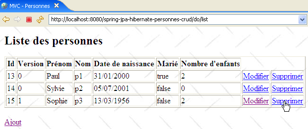
whose code is as follows:
...
<html>
<head>
<title>MVC - People</title>
</head>
<body background="<c:url value="/resources/standard.jpg"/>">
...
<c:forEach var="person" items="${people}">
<tr>
...
<td><a href="<c:url value="/do/edit?id=${person.id}"/>">Edit</a></td>
<td><a href="<c:url value="/do/delete?id=${personne.id}"/>">Delete</a></td>
</tr>
</c:forEach>
</table>
<br>
<a href="<c:url value="/do/edit?id=-1"/>">Add</a>
</body>
</html>
Line 12 shows the URL [/do/delete?id=XX] for the [Delete] link. The [doDeletePerson] method, which handles this URL, must delete the person with id=XX and then display the updated list of people in the group. Its code is as follows:
// Delete a person
private void doDeletePerson(HttpServletRequest request, HttpServletResponse response) throws ServletException, IOException {
// retrieve the person's ID
int id = Integer.parseInt(request.getParameter("id"));
// delete the person
service.deleteOne(id);
// redirect to the list of people
response.sendRedirect("list");
}
- Line 4: The URL being processed is in the form [/do/delete?id=XX]. We retrieve the value [XX] from the [id] parameter.
- line 6: we ask the [service] layer to delete the person with the obtained ID. We do not perform any validation. If the person we are trying to delete does not exist, the [dao] layer throws an exception that is propagated up to the [service] layer. We do not handle it here in the controller either. It will therefore propagate up to the web server, which, by configuration, will display the [exception.jsp] page, described in section 3.4.3.2:

- Line 9: If the deletion was successful (no exception), the client is redirected to the relative URL [list]. Since the URL just processed was [/do/delete], the redirect URL will be [/do/list]. The browser will therefore perform a [GET /do/list] request, which will display the list of people.
The [doEditPerson] method
This method handles the request [GET /do/edit?id=XX], which retrieves the form for updating the person with id=XX. The URL [/do/edit?id=XX] is used for the [Edit] and [Add] links in the [list.jsp] view:

whose code is as follows:
...
<html>
<head>
<title>MVC - People</title>
</head>
<body background="<c:url value="/resources/standard.jpg"/>">
...
<c:forEach var="person" items="${people}">
<tr>
...
<td><a href="<c:url value="/do/edit?id=${person.id}"/>">Edit</a></td>
<td><a href="<c:url value="/do/delete?id=${person.id}"/>">Delete</a></td>
</tr>
</c:forEach>
</table>
<br>
<a href="<c:url value="/do/edit?id=-1"/>">Add</a>
</body>
</html>
On line 11, we see the URL [/do/edit?id=XX] for the [Edit] link, and on line 17, the URL [/do/edit?id=-1] for the [Add] link. The [doEditPersonne] method must display the edit form for the person with id=XX, or if it is an addition, present an empty form.
 |
- In [1] above, the add form, and in [2], the edit form.
The code for the [doEditPerson] method is as follows:
// edit / add a person
private void doEditPerson(HttpServletRequest request, HttpServletResponse response) throws ServletException, IOException {
// retrieve the person's ID
int id = Integer.parseInt(request.getParameter("id"));
// Add or edit?
Person person = null;
if (id != -1) {
// Update - retrieve the person to be updated
person = service.getOne(id);
request.setAttribute("id", person.getId());
request.setAttribute("version", person.getVersion());
} else {
// add - create an empty person
person = new Person();
request.setAttribute("id", -1);
request.setAttribute("version", -1);
}
// We put the [Person] object into the user's session
request.getSession().setAttribute("person", person);
// and in the [edit] view template
request.setAttribute("errorEdit", "");
request.setAttribute("firstName", person.getFirstName());
request.setAttribute("lastName", person.getLastName());
Date birthDate = person.getBirthDate();
if (birthDate != null) {
request.setAttribute("dateOfBirth", new SimpleDateFormat("dd/MM/yyyy").format(dateOfBirth));
} else {
request.setAttribute("birthdate", "");
}
request.setAttribute("married", person.isMarried());
request.setAttribute("numberOfChildren", person.getNumberOfChildren());
// display the [edit] view
getServletContext().getRequestDispatcher((String) params.get("urlEdit")).forward(request, response);
}
- The GET request targets a URL of the form [/do/edit?id=XX]. On line 4, we retrieve the value of [id]. Then there are two cases:
- If id is not equal to -1, this is an update, and we need to display a form pre-filled with the information of the person to be updated. On line 9, this person is requested from the [service] layer.
- id is equal to -1. In this case, it is an addition, and an empty form must be displayed. To do this, an empty person is created on line 14.
- In both cases, the [id, version] elements of the [edit.jsp] page template described in section 3.4.3.2 are initialized.
- The resulting [Person] object is placed in the [edit.jsp] page template. This template includes the following elements: [errorEdit, id, version, firstName, errorFirstName, lastName, errorLastName, birthDate, errorBirthDate, married, numberOfChildren, errorNumberOfChildren]. These elements are initialized on lines 19–31, with the exception of those whose value is the empty string [erreurPrenom, erreurNom, erreurDateNaissance, erreurNbEnfants]. We know that if they are absent from the template, the JSTL library will display an empty string for their value. Although the [errorEdit] element also has an empty string as its value, it is nevertheless initialized because a check is performed on its value in the [edit.jsp] page.
- Once the model is ready, control is passed to the [edit.jsp] page, line 33, which will generate the [edit] view.
The [doValidatePersonne] method
This method handles the [POST /do/validate] request, which validates the update form. This POST is triggered by the [Validate] button:

Let’s review the input elements of the HTML form in the view above:
<form method="post" action="<c:url value="/do/validate"/>">
...
<input type="text" value="${nom}" name="nom" size="20">
...
<input type="text" value="${birthdate}" name="birthdate">
...
<c:choose>
<c:when test="${marie}">
<input type="radio" name="marie" value="true" checked>Yes
<input type="radio" name="marie" value="false">No
</c:when>
<c:otherwise>
<input type="radio" name="marie" value="true">Yes
<input type="radio" name="marie" value="false" checked>No
</c:otherwise>
</c:choose>
...
<input type="text" value="${nbenfants}" name="nbenfants">
...
<input type="hidden" value="${id}" name="id">
<input type="hidden" value="${version}" name="version">
<input type="submit" value="Submit">
</form>
The POST request contains the parameters [first_name, last_name, date_of_birth, married_to, number_of_children, id] and is sent to the URL [/do/validate] (line 1). It is processed by the following [doValidatePerson] method:
// validation of a person's modification or addition
public void doValidatePerson(HttpServletRequest request, HttpServletResponse response) throws ServletException, IOException {
// retrieve the posted elements
boolean formError = false;
boolean error;
// first name
String firstName = request.getParameter("firstName").trim();
// Is the first name valid?
if (firstName.length() == 0) {
// log the error
request.setAttribute("firstNameError", "First name is required");
formIsInvalid = true;
}
// the last name
String lastName = request.getParameter("lastName").trim();
// Is the first name valid?
if (name.length() == 0) {
// log the error
request.setAttribute("lastNameError", "Last name is required");
formIsInvalid = true;
}
// date of birth
Date birthdate = null;
try {
birthdate = new SimpleDateFormat("dd/MM/yyyy").parse(request.getParameter("birthdate").trim());
} catch (ParseException e) {
// log the error
request.setAttribute("birthdateError", "Invalid date");
formIsInvalid = true;
}
// marital status
boolean married = Boolean.parseBoolean(request.getParameter("married").trim());
// number of children
int numChildren = 0;
error = false;
try {
nchildren = Integer.parseInt(request.getParameter("nchildren").trim());
if (numberOfChildren < 0) {
error = true;
}
} catch (NumberFormatException ex) {
// record the error
error = true;
}
// Is the number of children incorrect?
if (error) {
// report the error
request.setAttribute("incorrectChildCount", "Incorrect number of children");
formIsInvalid = true;
}
// Person's ID
int id = Integer.parseInt(request.getParameter("id"));
// Is the form invalid?
if (formIsInvalid) {
// Redisplay the form with error messages
showForm(request, response, "");
// done
return;
}
// The form is valid - update the user stored in the session
// with the information sent by the client
Person person = (Person)request.getSession().getAttribute("person");
person.setBirthDate(birthDate);
person.setMarriedName(marriedName);
person.setNumberOfChildren(numberOfChildren);
person.setLastName(lastName);
person.setFirstName(firstName);
// persistence
try {
if (id == -1) {
// creation
service.saveOne(person);
} else {
// update
service.updateOne(person);
}
} catch (DaoException ex) {
// Redisplay the form with the error message
showForm(request, response, ex.getMessage());
// done
return;
}
// redirect to the list of people
response.sendRedirect("list");
}
// display pre-filled form
private void showForm(HttpServletRequest request, HttpServletResponse response, String errorEdit) throws ServletException, IOException {
// prepare the [edit] view template
request.setAttribute("editError", editError);
request.setAttribute("id", request.getParameter("id"));
request.setAttribute("version", request.getParameter("version"));
request.setAttribute("firstName", request.getParameter("firstName").trim());
request.setAttribute("lastName", request.getParameter("lastName").trim());
request.setAttribute("dateOfBirth", request.getParameter("dateOfBirth").trim());
request.setAttribute("spouse", request.getParameter("spouse"));
request.setAttribute("numberOfChildren", request.getParameter("numberOfChildren").trim());
// display the [edit] view
getServletContext().getRequestDispatcher((String) params.get("urlEdit")).forward(request, response);
}
- lines 7-13: The [firstName] parameter from the POST request is retrieved and its validity is checked. If it is incorrect, the [firstNameError] element is initialized with an error message and placed in the request attributes.
- lines 15–21: The same process is followed for the [lastName] parameter
- lines 23–30: The same process is applied to the [dateOfBirth] parameter
- Line 32: We retrieve the [marie] parameter. We do not check its validity because, in principle, it comes from the value of a radio button. That said, nothing prevents a program from making a [POST /.../do/validate] request accompanied by a fictitious [marie] parameter. We should therefore test the validity of this parameter. Here, we rely on our exception handling, which causes the [exception.jsp] page to be displayed if the controller does not handle the exception itself. Therefore, if the conversion of the [marie] parameter to a boolean fails on line 32, an exception will be thrown, resulting in the [exception.jsp] page being sent to the client. This behavior works for us.
- Lines 34–50: We retrieve the [nbenfants] parameter and check its value.
- Line 52: We retrieve the [id] parameter without checking its value
- Lines 54–59: If the form is invalid, it is redisplayed with the error messages generated earlier
- Lines 62–67: If it is valid, we create a new [Person] object using the form fields
- lines 69–82: the person is saved. The save operation may fail. In a multi-user environment, the person to be modified may have been deleted or already modified by someone else. In this case, the [dao] layer will throw an exception, which we handle here.
- line 84: if no exception occurred, the client is redirected to the URL [/do/list] to display the group’s new status.
- Line 79: If an exception occurred during saving, we request that the initial form be redisplayed, passing it the exception’s error message (3rd parameter).
The [showFormulaire] method (lines 88–97) constructs the model required for the [edit.jsp] page using the entered values (request.getParameter(" ... ")). Recall that the error messages have already been placed in the model by the [doValidatePersonne] method. The [edit.jsp] page is displayed on line 99.
3.4.4. Testing the Web Application
A number of tests were presented in Section 3.4.1. We invite the reader to run them again. Here we show additional screenshots illustrating cases of data access conflicts in a multi-user environment:
[Firefox] will be user U1’s browser. User U1 requests the URL [http://localhost:8080/spring-jpa-hibernate-personnes-crud/do/list]:

[IE7] will be user U2’s browser. User U2 requests the same URL:

User U1 begins editing the record for person [p2]:

User U2 does the same:

User U1 makes changes and submits:
 |
User U2 does the same:
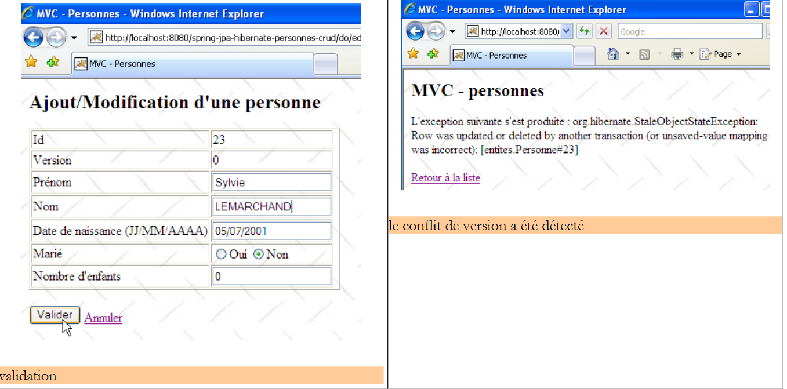 |
User U2 returns to the list of people using the [Back to list] link on the form:

They find the person [Lemarchand] as modified by U1 (married, 2 children). The version number of p2 has changed. Now U2 deletes [p2]:
 |
U1 still has their own list and wants to edit [p2] again:
 |
U1 uses the [Back to list] link to see what’s going on:

He discovers that [p2] is indeed no longer part of the list...
3.4.5. Version 2
We slightly modify the previous version to use the archives of the [service, dao, jpa] layers instead of their source code:
 |
- in [1]: the new Eclipse project. Note that the [service, dao, entities] packages are gone. These have been encapsulated in the [service-dao-jpa-personne.jar] archive [2] located in [WEB-INF/lib].
- The project folder is in [4]. We will import it.
There is nothing else to do. When the new web application is launched and we request the list of people, we receive the following response:
 |
Hibernate cannot find the [Person] entity. To resolve this issue, we must explicitly declare the managed entities in [persistence.xml]:
<?xml version="1.0" encoding="UTF-8"?>
<persistence version="1.0"
xmlns="http://java.sun.com/xml/ns/persistence"
xmlns:xsi="http://www.w3.org/2001/XMLSchema-instance"
xsi:schemaLocation="http://java.sun.com/xml/ns/persistence http://java.sun.com/xml/ns/persistence/persistence_1_0.xsd">
<persistence-unit name="jpa" transaction-type="RESOURCE_LOCAL">
<class>entities.Person</class>
</persistence-unit>
</persistence>
- Line 7: The Person entity is declared.
Once this is done, the exception disappears:
 |
3.4.6. Changing the JPA implementation
 |
- in [1]: the new Eclipse project
- in [2]: the TopLink libraries have replaced the Hibernate libraries
- The project folder is in [4]. We will import it.
Changing the JPA implementation involves only a few changes in the [spring-config.xml] file. Nothing else changes. The changes made to the [spring-config.xml] file were explained in section 3.1.9:
<?xml version="1.0" encoding="UTF-8"?>
<!-- the JVM must be launched with the argument -javaagent:C:\data\2006-2007\eclipse\dvp-jpa\lib\spring\spring-agent.jar
(replace with the exact path to spring-agent.jar)-->
<beans xmlns="http://www.springframework.org/schema/beans" xmlns:xsi="http://www.w3.org/2001/XMLSchema-instance"
...
<bean id="entityManagerFactory" class="org.springframework.orm.jpa.LocalContainerEntityManagerFactoryBean">
<property name="dataSource" ref="dataSource" />
<property name="jpaVendorAdapter">
<bean class="org.springframework.orm.jpa.vendor.TopLinkJpaVendorAdapter">
...
<property name="databasePlatform" value="oracle.toplink.essentials.platform.database.MySQL4Platform" />
...
</bean>
...
</beans>
Only a few lines need to be changed to switch from Hibernate to Toplink:
- line 11: JPA implementation is now handled by Toplink
- line 13: the [databasePlatform] property has a different value than with Hibernate: the name of a class specific to Toplink. Where to find this name was explained in section 2.1.15.2.
That’s it. Note how easy it is to switch DBMS or JPA implementations with Spring. We’re not quite done yet, though. When running the application, an exception occurs:
 |
This is the same issue encountered and described in section 3.1.9. It is resolved by launching the JVM with a Spring agent. To do this, modify the Tomcat startup configuration:
 |
- in [1]: we selected the [Run / Run...] option to modify Tomcat’s configuration
- in [2]: we selected the [Arguments] tab
- in [3]: we added the -javaagent parameter as described in section 3.1.9.
Once this is done, we can request the list of people:

3.5. Other examples
We would have liked to show a web example in which the Spring container was replaced by the JBoss EJB3 container discussed in Section 3.2:
 |
- in [1]: the Eclipse project
- in [3]: its location in the examples folder. We will import it.
We reused the configuration [jboss-config.xml, persistence.xml] described in Section 3.2, then modified the [init] method of the [Application.java] controller as follows:
// init
@SuppressWarnings("unchecked")
public void init() throws ServletException {
try {
// retrieve the servlet's initialization parameters
ServletConfig config = getServletConfig();
// process the other initialization parameters
String value = null;
for (int i = 0; i < parameters.length; i++) {
// parameter value
value = config.getInitParameter(parameters[i]);
// Is the parameter present?
if (value == null) {
// log the error
initializationErrors.add("The parameter [" + parameters[i] + "] has not been initialized");
} else {
// store the parameter value
params.put(parameters[i], value);
}
}
// The URL for the [errors] view requires special handling
errorsURL = config.getInitParameter("errorsURL");
if (urlErrors == null)
throw new ServletException("The [urlErrors] parameter has not been initialized");
// application configuration
// Start the JBoss EJB3 container
// The configuration files ejb3-interceptors-aop.xml and embedded-jboss-beans.xml are used
EJB3StandaloneBootstrap.boot(null);
// Create application-specific beans
EJB3StandaloneBootstrap.deployXmlResource("META-INF/jboss-config.xml");
// Deploy all EJBs found in the application's classpath
//EJB3StandaloneBootstrap.scanClasspath("WEB-INF/classes".replace("/", File.separator));
EJB3StandaloneBootstrap.scanClasspath();
// Initialize the JNDI context. The jndi.properties file is used
InitialContext initialContext = new InitialContext();
// Instantiate the service layer
service = (IService) initialContext.lookup("Service/local");
// Clear the database
clean();
// populate the database
fill();
} catch (Exception e) {
throw new ServletException(e);
}
}
- Lines 28–38: The EJB3 container is started. This replaces the Spring container.
- Line 41: We request a reference to the [service] layer of the application.
At first glance, these are the only changes needed. Upon execution, the following error occurs:
 |
I was unable to determine exactly where the problem lay. The exception reported by Tomcat seems to indicate that the object named "TransactionManager" was requested from the JNDI service, which did not recognize it. I leave it to the readers to find a solution to this problem. If a solution is found, it will be incorporated into this document.